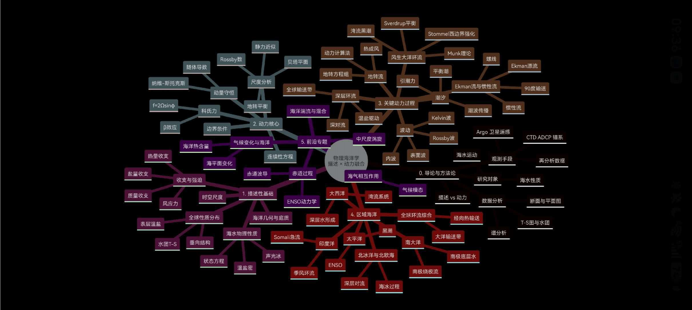
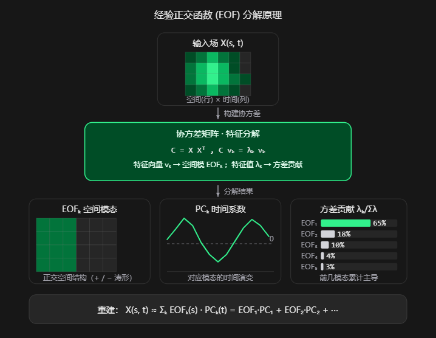
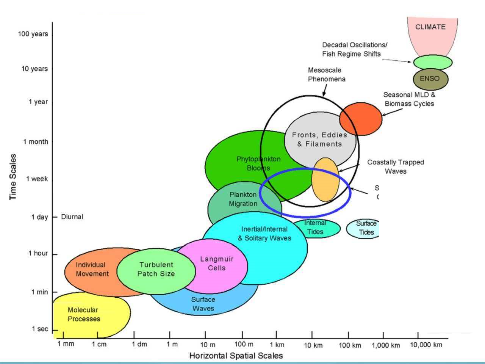
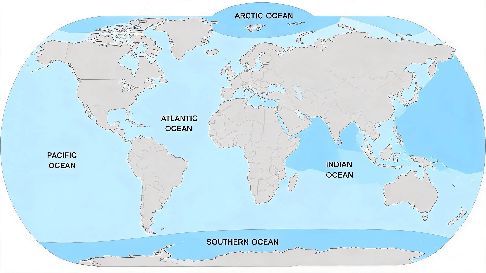
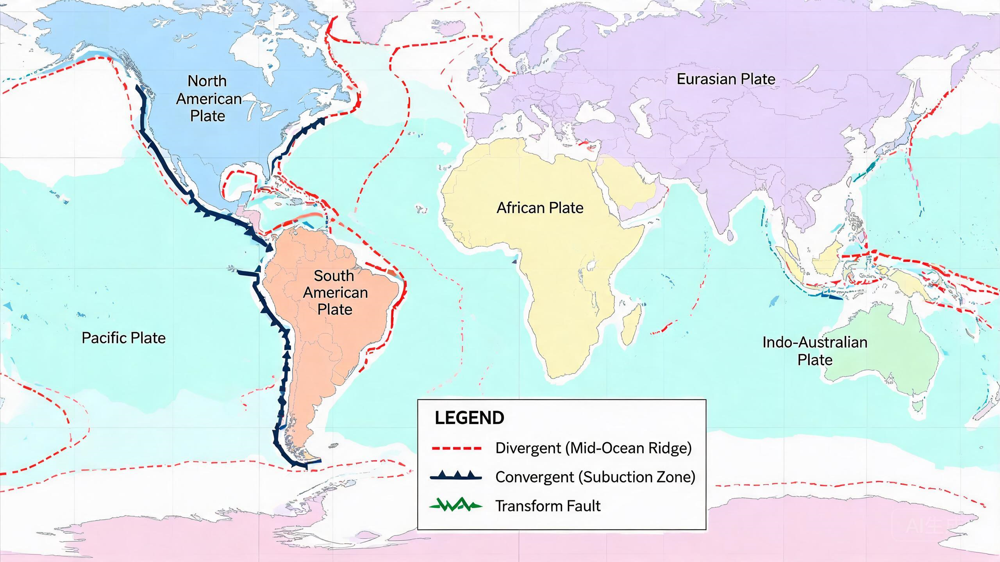
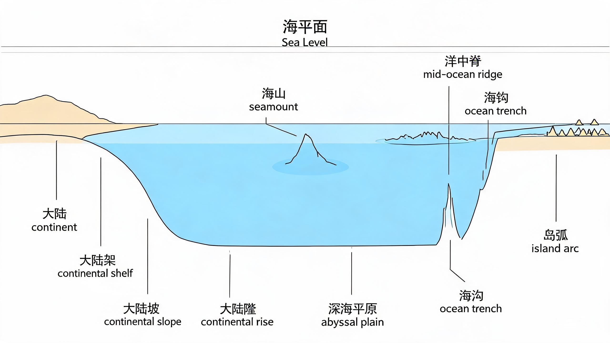

图文展示
图片 + 文字卡片，自适应网格布局。点击图片可放大查看。
经验正交函数 (EOF) 分解原理
EOF 分解将时空数据场 X(s,t) 分解为空间模态 EOFₖ 与时间系数 PCₖ。前几阶模态通常累计贡献大部分方差，可用于气候信号提取与数据降维。
卡片标题二
这里写图片的说明文字，描述内容或背景。
卡片标题三
这里写图片的说明文字，描述内容或背景。
第一至第八讲
What 内容：物理海洋学的内容包括海水的物理性质、海洋的观测工具、海流的形成机理、海洋的数学模型等。
Why 机理：什么样的物理因素导致了这些现象，有哪些性质发生了变化，哪些作用力互相影响，海洋的变化对我们有何关联。
How 应对：如何利用这些公式和模型去解析和预测新的现象。这也是研究的一般逻辑，首先对现象进行观测、总结和归纳，并尝试去分析和归因，最后利用得到的新理论和新模型去做进一步的应用和推进。
采用二八法则，选择头部大学开设的 MOOC，学习其中的课程介绍内容，用 AI 工具做一个汇总，形成一个物理海洋学习的思维导图。

图 物理海洋学思维导图（Mindmap of Descriptive Physical Oceanography）
学习了新的智能编程工具 TraeCode。
位温总是低于现场温度，位温、盐度与密度存在计算关系。
混合密度增大效应：两个水团密度相同，混合后密度大于原来的水体；两个水团密度不同，混合后密度大于二者的加权密度。
盐度越高，冰点越低，深海海水压力大时，冰点会更低；死亡冰柱的形成原因与此相关——海冰结冰时析出高盐度、低冰点的浓盐水，这股浓盐水因密度大而下沉，冰点低于正常海水团，因此将其接触到的周围海水迅速冻结，从而形成一个不断向海底延伸的冰壳通道。
死水（Dead Water）：淡水层在咸水层之上，将会产生内波，间歇性阻碍船只运行。
海洋总体热收支：Qs（短波辐射，净增加） > Qe（潜热通量，净减少） > Qb（长波辐射，净减少） > Qh（感热通量，净减少）。
温跃层在不同纬度的差别：低纬度海区温跃层浅而强，中纬度海区最深，高纬度海区变浅且强度先增后减，极地海域则基本消失。
原本以为短波辐射应该大于潜热通量，但没有考虑到大气对于海洋的逆辐射同样也会产生逆辐射，两相抵消的净值就没那么大了。而潜热通量来源于海洋的蒸发，以海洋的体积而言，其表面积相当大，因而蒸发尤为强烈，尤其是在低纬度地区。
温跃层的差异由太阳辐射强度、海水状态和风浪等因素共同构成。
赤道热带：太阳辐射强，气温远高于深海温度，同时海水主要为上升流，因此混合层浅但温度差异大，温跃层强度高而深度浅。
副热带：太阳辐射减弱，但气温仍高于深海温度，海水为辐聚的下沉流，因此混合层可以压得很深，温跃层强度降低但深度增加。
副极地：太阳辐射进一步减弱，气温接近深海温度，风浪混合加强，因此层结被削弱，而由于表面低温低盐的水体与下层较为暖咸的水体的密度等差异，温跃层强度削弱但可能出现二次温跃。
极地：气温与深海温度大体一致，温跃层几乎消失。
学习了三种海洋数据的分析方式：剖面 / 空间映射分析、时间序列分析，以及水团 / 多参数分析。
EOF（Empirical Orthogonal Functions，经验正交分解）：将数据分解为空间模态（EOF）和时间模态（PC），前几阶模态通常累计贡献大部分方差，可用于气候信号提取与数据降维。

图 EOF（经验正交分解）原理示意：时空数据场 X(s,t) 被分解为空间模态 EOFₖ 与时间系数 PCₖ 的正交基组合。
惯性流（Inertial Current）：由科里奥利力产生，水质点沿惯性圆做圆周运动。
地转流（Geostrophic Current）：由科里奥利力与水平压强梯度力平衡后产生，海水沿等压线流动。
艾克曼螺旋（Ekman Spiral）：由科里奥利力与湍摩擦力平衡后产生，表层海水偏转方向逐层传递形成螺旋结构。
当离岸风发生时，在北半球，由于艾克曼螺旋，海流整体与风向垂直向右，结果是表面海流被运送往固定方向。表层海水减少的地区将从深层运水填补，产生上升流；海水增多的地区将把表层海水送往深层，产生下沉流，然后在深层形成反向的海流，构成艾克曼抽吸。
当风形成环流时，艾克曼抽吸将变为辐聚下沉或辐散上升。
Sverdrup Balance（斯维尔德鲁普平衡）：在信风作用下，海洋浅表面发生艾克曼螺旋，形成海表环流，并发生艾克曼抽吸——在赤道附近形成下沉流，在高纬度地区形成上升流，从而使得深层海水发生向赤道的流动。
这同样可以用深海的位涡守恒（Potential Vorticity Conservation）解释：当水体辐聚下沉时，水团被压缩，行星涡度即科里奥利参数 f 也需要减少以维持守恒，因此水体需要向低纬度流动。
原先不理解 Sverdrup Balance 是如何实现的，现在明白环流的辐聚下沉会压缩深层水体，与位涡守恒建立联系（Π ≈ f/H），就能解释水体的运动方向了：下沉使 H 减小 → 为维持 Π 不变，行星涡度 f 必须减小 → 水体向低纬度流动。
波的共性：有恢复力、有传输性、低质量、高能量。
频散波（Dispersive Wave）：不同波具有不同波速和频率，从同一起点出发后逐渐分散，能量损耗较大。
非频散波（Non-dispersive Wave）：不同波可形成波包，具有一定群速度，可将能量传递很远。
重力波（Gravity Wave）：共同特点是以浮力（或重力）作为恢复力。
第一讲 描述性物理海洋学导论
Oceanic motions span an enormous range of spatial and temporal scales, from millimetre-scale turbulence lasting seconds to the global thermohaline circulation that extends over entire ocean basins and evolves over centuries to millennia. A central idea in physical oceanography is the separation of scales: every phenomenon is characterized by a typical length scale L and time scale T, and the dominant dynamics—wave motion, geostrophic balance, or turbulent mixing—depend strongly on these scales. Interactions across scales, such as mesoscale eddies feeding back on the mean circulation, are a core topic of modern oceanography.
海洋的运动跨越极其宽广的空间与时间尺度：小到毫米级的湍流、秒级的表面波动，大到上万公里的全球温盐环流、长达百年甚至千年的深层水循环。物理海洋学的一个核心思想是尺度分离——每种现象都有其特征长度 L 与特征时间 T，其主导动力机制（波动、地转平衡、湍流混合等）随尺度不同而不同；而不同尺度之间的相互作用（如中尺度涡对大尺度环流的反馈）正是现代海洋学的核心问题之一。

图 1-1 海洋现象的空间与时间尺度谱（Spatial and temporal scales of oceanic processes）。横坐标为水平空间尺度，纵坐标为时间尺度，不同颜色的椭圆代表不同类型的海洋动力过程。
第二讲 海洋的尺度、形态与海底物质

图 2-1 世界海洋分布图（Distribution of the world's oceans），标注了太平洋、大西洋、印度洋、北冰洋和南大洋的地理位置。
The world's largest ocean basin, accounting for about 46% of the total area of the world's oceans. It is extremely wide at the equator, with numerous trenches and island arcs (the "Ring of Fire") along its western and northern margins, many islands and marginal seas, and the North Pacific is unable to form dense deep water.
世界最大洋盆，约占世界大洋总面积 46%；赤道处极宽，西、北侧多海沟岛弧（"火环"），岛屿和边缘海多，北太平洋不能形成致密深层水。
S-shaped, with the mid-ocean ridge running through its center. The northern North Atlantic is one of the main source regions of the world's deep water, has the highest surface salinity, and the Mediterranean Sea exports high-salinity warm water.
呈"S"形，洋中脊纵贯中部；北大西洋北部是世界深层水主要源地之一，表层盐度最高，地中海输出高盐暖水。
Its northern part is enclosed by land, with no high-latitude cold source, so cold dense water cannot form. The topography is rough and the region is strongly influenced by the monsoon; the Bay of Bengal has fresh surface water, while the Arabian Sea and the Red Sea are very saline.
北部被陆地封闭，无高纬冷源，不能形成冷致密水；地形粗糙，受季风影响显著，孟加拉湾表层淡、阿拉伯海和红海很咸。
Often regarded as a Mediterranean-style sea connected to the Atlantic Ocean. It is surrounded by wide continental shelves, its central basin is divided by the Lomonosov Ridge, it is covered by sea ice year-round, and it exchanges water with the Pacific and Atlantic Oceans through the Bering Strait and Fram Strait.
常被视为与大西洋相连的地中海式海；周围大陆架宽广，中央被罗蒙诺索夫海岭分隔，常年海冰覆盖，通过白令海峡和弗拉姆海峡等与太平洋、大西洋交换。
The only region outside the Arctic where eastward flow can circle the globe. The Drake Passage connects the three major oceans and constrains the Antarctic Circumpolar Current (ACC), and it is the formation region of the densest bottom water in the world, mainly in the Weddell Sea and Ross Sea.
北极以外唯一可绕全球向东流动的区域；德雷克海峡连接三大洋并约束 ACC，是世界最致密底层水（主要在威德尔海和罗斯海）的形成区。
Plate tectonics creates new seafloor at mid-ocean ridges through seafloor spreading, forms trenches and island arcs through subduction, and shapes ocean basin topography while controlling deep-water exchange and ocean mixing through fracture zones, sills, and seafloor roughness. This process is accompanied by records of geomagnetic reversals that can be used to determine seafloor age, while differences in spreading rates (about 2–16 cm/year) produce varying topographic roughness along mid-ocean ridges.
板块构造通过海底扩张在洋中脊形成新海底，通过俯冲形成海沟和岛弧，并通过断裂带、海槛和海底粗糙度塑造洋盆地形、控制深层水交换与海洋混合；其过程伴随地磁倒转记录，可用于测定海底年龄，而扩张速率差异（约2—16 cm/年）又造成洋中脊地形粗糙度不同。

图 2-2 全球板块构造图（Global plate tectonics map），标注了七大主要板块及板块边界类型（离散、汇聚、转换断层）。

图 2-3 海底地形剖面图（Seafloor topography cross-section），示意从大陆到深海的主要地貌单元：大陆架、大陆坡、大陆隆、深海平原、海山、洋中脊、海沟与岛弧。
Extending seaward from the coast, with an average slope of about 1:500 and an average width of about 65 km (locally up to ten times). At its outer edge (shelf break) the slope increases to about 1:20, with an average water depth of about 130 m; the bottom sediment is mainly sand, and it hosts the world's major fishing grounds.
从海岸向海延伸，平均坡度约1:500，平均宽度约65 km（局部可达其十倍），外缘（架缘）坡度增至约1:20，平均水深约130 m；底质以砂为主，是世界主要渔场所在。
Descending from the shelf break to the deep-sea floor, with an average vertical drop of about 4000 m and locally up to 9000 m. The slope is markedly steeper than the landward slope, the sediment is mainly mud, and submarine canyons and turbidity currents are commonly developed.
从架缘下降到深海海底，平均垂直落差约4000 m，局部可达9000 m；坡度明显陡于陆地坡，物质以泥为主，常发育海底峡谷和浊流。
The region at the lower part of the continental slope where the slope gentles and transitions to the deep-sea floor, located between the continental slope and the abyssal plain.
大陆坡下部向深海海底过渡、坡度变缓的区域，位于大陆坡与深海平原之间。
Very flat regions of the deep-sea floor, formed by sedimentation covering rough topography; locally they can be so smooth that the relief is only 2 m over a distance of 100 km.
深海海底中非常平坦的区域，沉积作用覆盖粗糙地形形成；局部可平滑到100 km内起伏仅2 m。
Isolated mountains rising significantly above the surrounding seafloor, with an average height of about 2 km. Those that emerge above the sea surface become islands; those that were planed off and then subsided are called guyots (flat-topped seamounts), often forming seamount chains from hotspots.
明显高出周围海底的孤立山体，平均高约2 km；露出海面即成岛屿，被削平后再下沉的称平顶海山（guyot），常由热点形成海山链。
The center of seafloor spreading. The global mid-ocean ridge system is about 40,000 km long and is the most prominent topographic feature on Earth. Slow-spreading ridges (e.g., the Mid-Atlantic Ridge) have rift valleys and rough topography, while fast-spreading ridges (e.g., the East Pacific Rise) have a central rise and are relatively smooth.
海底扩张中心，全球洋中脊系统长约4万km，是地球最显著的地形特征；慢扩张脊（如大西洋中脊）有裂谷、地形粗糙，快扩张脊（如东太平洋海隆）中心隆起、相对平滑。
Transverse offsets of mid-ocean ridges, approximately vertical planes, with the crust on both sides moving in opposite directions; they can serve as channels for deep water to cross ridges (e.g., the Romanche, Eltanin, and Udintsev fracture zones).
洋中脊的横向错断，近似垂直平面，两侧地壳反向运动；可成为深层水跨脊通道（如Romanche、Eltanin、Udintsev断裂带）。
Formed by plate subduction, narrow and long, with a maximum depth of up to 11,000 m (Mariana Trench). They are mostly distributed in the Pacific, often arc-shaped, with an island arc on one side, and can guide or influence deep boundary currents.
板块俯冲形成，窄而长，最深可达11,000 m（马里亚纳海沟）；多分布在太平洋，常呈弧形，一侧伴岛弧，可引导或影响深层边界流。
Arc-shaped island chains formed by volcanic and seismic activity on the landward side of trenches, such as the Aleutian Islands, the Lesser Antilles, and the Sunda Arc.
海沟陆侧由火山和地震活动形成的弧形岛屿链，如阿留申群岛、小安的列斯群岛、巽他弧。
A weight is lowered on a rope of known length until it touches the bottom. It is slow, and in deep water it is difficult to determine whether the weight has reached the bottom or whether the rope is vertical.
用已知长度的绳子下放重物直到触底；速度慢，深水中难以判断重物是否触底、绳子是否垂直。
The main method since the 1920s. It measures the travel time of an acoustic pulse from the ship to the seafloor and back; half of that time multiplied by the average sound speed in seawater gives the depth. The main uncertainty comes from the sound speed, which varies with temperature and salinity.
1920年以来主要方法；测量声脉冲从船到海底再返回的时间，取一半乘以海水平均声速得深度；主要不确定来自声速值（随温度、盐度变化）。
Multiple echo sounders are installed along the ship's bottom, providing two-dimensional "swath" mapping of the seafloor beneath the ship.
沿船底安装多个测深仪，提供船下海底二维"条带"测绘。
Satellites measure the Earth's gravity field and invert it for seafloor topography, which can reveal previously unknown fracture zones and seamounts in remote regions. However, uneven seafloor materials (such as thick sediment cover) may not be detected by the gravity field, so echo sounding is still needed for verification.
卫星测量地球重力场，反演海底地形，可发现偏远地区未知的断裂带、海山等；但海底物质不均匀（如厚沉积覆盖）可能不被重力场探测到，仍需回声测深验证。
Modern nautical charts are integrated products that combine ship-measured water depths with satellite gravity measurements.
现代海图是船测水深与卫星重力测量融合的产品。
第三讲 海水的物理性质
Many unique characteristics of the ocean originate from the molecular nature of water itself. The polar dipole structure, hydrogen bonding, and the energy required to form molecular chains together determine water's extraordinary heat capacity, density behavior, latent heats, surface tension, and viscosity — all of which play central roles in shaping the ocean and global climate.
海洋的许多独特性质源于水本身的分子特性。极性偶极结构、氢键以及形成分子链所需的能量，共同决定了水异常高的比热、特殊的密度行为、高潜热、高表面张力和粘度——这些性质在塑造海洋和全球气候方面发挥着核心作用。
Water is a polar molecule with a positive side (two H⁺) and a negative side (one O²⁻). This polarity endows water with a high dielectric constant, enabling it to dissolve most ionic substances — the very reason the ocean is salty with abundant dissolved ions.
水是极性分子，带正电的 H 和带负电的 O 构成两端。极性赋予水高介电常数，使其能溶解绝大多数离子型物质——这正是海洋之所以咸、含有丰富溶解离子的根本原因。
The polar nature of water causes molecules to form polymer-like chains of up to eight molecules; approximately 90% of water molecules exist in these chains. Energy is required to create and maintain the chains, which is directly related to water's exceptionally high heat capacity.
水分子的极性使其形成最多 8 个分子的链式结构，约 90% 的水分子处于链中。形成和维持这些链需要能量，这与水异常高的比热直接相关。
Water has the highest heat capacity of all liquids except ammonia. This makes the ocean Earth's primary heat reservoir: it stores approximately 90% of anthropogenic global warming heat, and ocean currents redistribute this stored heat across the globe.
水是除氨以外比热最高的液体。这使海洋成为地球主要的热量储存库：它储存了约 90% 的人为全球变暖热量，洋流再将这些热量输送到全球各地。
Fresh water reaches its maximum density at about 4°C (chains align as they form). In seawater, dissolved salt inhibits chain formation, so density increases monotonically down to the freezing point — which itself is depressed well below 0°C with increasing salinity.
淡水在约 4°C 时密度最大（链状结构随温度降低而有序排列）。海水中的盐抑制链状结构形成，因此海水密度在冰点（随盐度升高而降低到 0°C 以下）之前一直单调增加。
Water has very high heats of vaporization (liquid → gas) and fusion (solid → liquid). These latent heats are key energy carriers in the climate system: evaporation removes heat from the ocean surface, while condensation over land releases that heat, driving atmospheric circulation.
水的蒸发潜热（液态 → 气态）和融化潜热（固态 → 液态）都很高。这些潜热是气候系统的关键能量载体：蒸发从海洋表面带走热量，水汽在陆地上凝结时又释放热量，驱动大气环流。
Water's chain-like molecular structure produces unusually high surface tension and viscosity for its atomic weight. The high surface tension permits centimeter-scale capillary waves, whose restoring forces include both surface tension and gravity.
水的链状分子结构使其在相对原子质量下具有异常高的表面张力和粘度。高表面张力允许厘米尺度的 毛细波 存在，其恢复力包括表面张力和重力。
Despite their small size, capillary waves are critical in determining the frictional stress between wind and water. This stress generates larger wind waves and propels the frictionally-driven circulation of the ocean's surface layer — from the Ekman spiral to the large-scale subtropical and subpolar gyres. The high heat capacity of the ocean further means that the ocean dominates Earth's heat budget and climate variability on timescales from seasons to centuries.
尽管毛细波很小，它们在决定海风与海水之间的摩擦应力方面至关重要。这种应力生成更大的风浪，并驱动摩擦驱动的表层环流——从艾克曼螺旋到大尺度的副热带和副极地环流。海洋的高比热进一步意味着海洋主导着地球的热量收支以及从季节到世纪尺度的气候变率。
Seawater is slightly compressible: compression warms a parcel adiabatically, and expansion cools it. When comparing water parcels sampled at different pressures, these pressure-induced temperature changes are unrelated to actual heat sources. Potential temperature θ removes this pressure effect by adiabatically moving each parcel to a common reference pressure before comparison.
海水具有微弱可压缩性：压缩会使水团绝热升温，膨胀则使其降温。当比较不同压力下采样的水团时，这些压力引起的温度变化与实际热源无关。位温 θ 通过将每个水团绝热移动到共同参考压力后再进行比较，从而消除了这种压力效应。
θ ≡ T + Γ · (pref − p) (approx.)
θ is the temperature a water parcel would have if moved adiabatically from its in situ pressure p to a reference pressure pref (usually 0 dbar / surface). For accurate computation, use the Bryden (1973) algorithm or the TEOS-10 Gibbs SeaWater (GSW) toolbox.
若将水团从现场压力 p 绝热移动到参考压力 pref（通常取 0 dbar，即海面）后所具有的温度，即为位温 θ。近似公式为 θ ≈ T + Γ · (pref − p)；精确计算需用 Bryden (1973) 算法或 TEOS-10 GSW 工具箱。
Γ ≡ −(∂T/∂p)θ is the rate of temperature change per unit pressure along an adiabatic displacement. Γ is positive (parcel warms when compressed) and depends on S, T, and p. Typical values in the ocean are 0.1–0.2 °C per 1000 dbar.
Γ 是沿绝热位移方向单位压力变化下的温度变化率，正值（压缩时水团升温），是盐度、温度和压力的函数。海洋中典型值为 每 1000 dbar 约 0.1–0.2 °C。
For any water parcel below the surface (p > 0), lifting it adiabatically to the surface causes it to expand and cool. Therefore θ is always less than the in situ T. In the deep ocean, the difference can reach ~0.5 °C at abyssal depths.
对于海面以下的任何水团（p > 0），将其绝热抬升到海面会因膨胀而降温。因此 θ 总是低于现场温度 T。在深海中，差异在 深海深度可达约 0.5 °C。
Adiabatic compression/expansion does not involve heat exchange — it is just a side effect of pressure. Using in situ T to diagnose water-mass origin would misinterpret this pressure warming as a heat source. Potential temperature removes this artifact, so θ is the standard variable for identifying and comparing deep water masses.
绝热压缩/膨胀 不 涉及热量交换——它只是压力作用的副产品。用现场温度 T 诊断水团来源会把这种压力升温误判为热源。位温消除了这种假象，因此是识别和比较深层水团的标准变量。
Seawater density ρ is a function of three state variables: temperature, salinity, and pressure (depth). Each variable competes to change density — and their relative importance varies across the ocean. Understanding this competition is fundamental to describing stratification, mixing, advection, and the ocean's overturning circulation.
海水密度 ρ 是温度、盐度和压力（深度）这三个状态变量的函数。每个变量都在影响密度变化——它们的相对重要性在整个海洋中各不相同。理解这种竞争关系是描述层结、混合、平流以及海洋翻转环流的基础。
Temperature ↑ → ρ ↓ (thermal expansion)
Salinity ↑ → ρ ↑ (salt adds mass)
Pressure (depth) ↑ → ρ ↑ (compression)
Units: T in °C, S dimensionless (PSS-78), p in dbar (≈ depth in m × 1.02)
温度↑ → 密度↓（热膨胀）
盐度↑ → 密度↑（盐增加质量）
压力（深度）↑ → 密度↑（压缩）
单位：T 用 °C，S 无单位（PSS-78），p 用 dbar（≈ 深度 m × 1.02）
ρ = ρ(S, T, p) is given by empirical polynomial fits to laboratory data. Standard implementations:
EOS-80 (UNESCO 1980) — most climate models through ~2010
TEOS-10 / GSW (IOC 2010) — current standard; provides not only density but also θ, σθ, sound speed, and all thermodynamic derivatives.
ρ = ρ(S, T, p) 由实验室数据的经验多项式拟合给出。标准实现：
EOS-80（UNESCO 1980）—— 2010 年前大多数气候模式使用
TEOS-10 / GSW（IOC 2010）—— 当前标准；不仅给出密度，还给位温、σθ、声速及所有热力学导数。
σt (sigma-t) = ρ(S, T, p = 0) − 1000: density computed at surface pressure, ignores pressure effect — useful for upper-ocean and surface mapping.
σθ (sigma-theta) = ρ(S, θ, p = 0) − 1000: uses potential temperature instead of in situ T — removes compression effect, the preferred variable for comparing deep water masses.
σt（sigma-t）= ρ(S, T, p = 0) − 1000：在表面压力下计算的密度，忽略压力效应，适合上层海洋和海表图绘制。
σθ（sigma-theta）= ρ(S, θ, p = 0) − 1000：用位温代替现场温度——消除了压缩效应，是比较深层水团时首选的变量。
Low/mid-latitudes: T dominates density (thermocline → pycnocline)
High latitudes / polar: S dominates (fresh surface from precipitation or sea-ice melt, brine rejection during formation)
Abyssal (depth > 3000 m): pressure's compression effect matters — even water with same S, θ will have higher ρ at greater depth
低/中纬度：温度主导密度（温跃层 → 密度跃层）
高纬 / 极地：盐度主导（降水或海冰融化使表层变淡，海冰形成时排盐增密）
深海（深度 > 3000 m）：压力压缩效应显著——即使 S、θ 相同的水，深度更深则 ρ 更大
For two water masses with density ρ₁ and ρ₂: a homogeneous mixture can end up with density greater than the linear interpolation between ρ₁ and ρ₂. This "cabbeling" effect is common where warm-salty and cold-fresh water masses converge, making the mixture denser than both end-members and prone to sinking.
对于密度为 ρ₁ 和 ρ₂ 的两个水团：其均匀混合体的密度可能 大于 ρ₁ 和 ρ₂ 之间的线性插值。这种"合并"效应在暖盐和淡冷水团交汇处很常见，使得混合体比两端水团都更致密，有下沉倾向。
Historical salinity ≈ parts per thousand (‰) based on chlorinity. The modern Practical Salinity Scale of 1978 (PSS-78) replaces chlorinity with electrical conductivity relative to a standard KCl solution. Practical salinity has no formal units; typical open-ocean values are 34–35.5 with a range of ~2–42.
历史盐度约以千分比（‰）表示，基于氯度。现代 1978 实用盐度标（PSS-78） 用相对于标准 KCl 溶液的电导率代替氯度。实用盐度 无正式单位；开阔大洋典型值 34–35.5，范围约 2–42。
The physical properties of seawater — density stratification, freezing behavior, latent heat — give rise to some of the ocean's most fascinating and counterintuitive phenomena. Two of these are "dead water" (first documented by Fridtjof Nansen) and the "brinicle" or "ice finger" (captured on film only in 2011).
海水的物理性质——密度层结、结冰行为、潜热——产生了海洋中一些最迷人、最反直觉的现象。其中两个是"死水"（由南森首次记录）和"死亡冰柱"（2011 年才首次被拍摄到）。
When a fresh- or brackish-water layer overlies denser salt water, a strong pycnocline forms at their interface. A ship moving through such a basin generates internal waves on the pycnocline instead of transferring energy to forward motion. The vessel slows dramatically or even stalls — a phenomenon called "dead water" (dødvann in Norwegian). Nansen's ship Fram experienced this during its 1893–1896 Arctic drift expedition, and he documented its intermittent nature.
当淡水或半咸水层覆盖在更咸更密的海水之上时，在两者界面处形成强烈的密度跃层（pycnocline）。船在这样的水域中航行时，其产生的能量激发了跃层上的 内波，而不是推动船身前进。船速剧烈减慢甚至停滞——这一现象被称为"死水"（挪威语 dødvann）。南森的"Fram"号在 1893–1896 年北冰洋漂流探险中遇到过这种情况，他记录了其间歇性的特点。
When seawater freezes, ice crystals reject salt into a dense, cold brine. This brine has a freezing point well below 0°C and sinks because of its high density. As it descends through slightly warmer surrounding water, it freezes that water too, forming a hollow, downward-growing ice column called a brinicle or "ice finger". When it reaches the seafloor it freezes any organism it touches, hence the name "death ice pillar". First captured on film in Under the Sea - Ice (BBC, 2011).
海水结冰时，冰晶体将盐排出，形成高密度、低温的浓盐水（brine rejection）。这股浓盐水的冰点 远低于 0°C，因密度很大而下沉。在穿过稍微温暖的周围海水时，它又把周围海水冻结，形成一根向下生长的中空冰柱，称为 死亡冰柱 或"冰手指"。当它触及海底时，会冻结任何被它碰到的生物，因此得名。首次在 BBC 纪录片《Under the Sea - Ice》（2011）中被拍摄到。
Both phenomena are direct consequences of the equation of state ρ(S, T, p). Dead water relies on the fact that S can dominate ρ even at modest density contrasts, and that a pycnocline is a waveguide for internal waves. Brinicles rely on two simultaneous effects: (1) the freezing point of seawater decreases with increasing salinity (approximately −0.055 °C per psu), and (2) pressure further depresses the freezing point — so a brine formed at the surface can remain liquid at depths where the surrounding seawater is already cold enough to freeze it.
这两种现象都是状态方程 ρ(S, T, p) 的直接结果。死水依赖于：盐度可以在很小的密度对比下主导密度，而且密度跃层是内波的波导。死亡冰柱依赖于两个同时发生的效应：(1) 海水冰点随盐度升高而 降低（约每 psu −0.055 °C），(2) 压力进一步 压低 冰点——因此海表形成的浓盐水在深海仍可保持液态，而周围海水却已足够冷、足以被它冻结。
第四讲 水特征的典型分布
A water mass is a body of water whose characteristic properties are set by a single identifiable formation process. Most water masses form at the sea surface, where their identifying θ and S signatures are directly related to surface forcing. As they are advected and mixed through the ocean interior, these properties — being conservative in the absence of heat/salt sources — serve as powerful tracers of ocean circulation and mixing pathways.
水团是一组特征属性由单一可识别形成过程所决定的水体。绝大多数水团形成于海表，其位温和盐度特征直接由海表强迫决定。由于 θ 和 S 在海洋内部（无热源/盐源条件下）是保守属性，它们随平流和混合保留下来，成为追踪大洋环流与混合路径的有力指示物。
Water mass = body of water formed by one identifiable process; its properties (θ, S) are set at the surface and preserved during advection.
Conservative properties are those with no interior sources or sinks — potential temperature θ and practical salinity S are the two key conservative tracers. Density is not conservative because it also depends on pressure.
Water type = a single point in θ-S property space (mathematical ideal); water mass = a line or swath of points (Tomczak & Godfrey, 2003).
水团 = 由单一可识别过程形成的水体；其位温 θ 和盐度 S 在海表被设定后，在平流过程中保留下来。
保守属性是海洋内部无源无汇的量——位温 θ 和实用盐度 S 是两个核心保守示踪物。密度则 不 保守，因为它还依赖压力。
水型 = θ-S 空间中的一个点（数学理想）；水团 = 一条线或一片区域（Tomczak & Godfrey, 2003）。
The potential temperature-salinity (θ-S) diagram is the primary tool for identifying water masses. Since θ and S are conservative, mixtures of two water masses fall along a straight line in θ-S space. Oceanographers plot θ on the y-axis and S on the x-axis, with density contours overlaid.
Isopycnal (neutral density) surfaces are the primary flow conduits in the ocean interior — properties spread along these surfaces, not across them.
位温-盐度（θ-S）图是识别水团的核心工具。由于 θ 和 S 保守，两个水团的混合物在 θ-S 空间中落在一条 直线 上。海洋学家把 θ 放在 y 轴、S 放在 x 轴，并叠加密度等值线。
等密度面（中性密度面）是海洋内部物质输运的主要通道——属性沿这些面 扩散，而不是穿越它们。
Mode water gets its name from "mode" in statistics — the most frequent value in a dataset. It is a thick layer of nearly uniform θ and S that forms each winter when deep mixed layers homogenize the upper ocean, then is subducted along neutral density surfaces into the interior.
Examples: 18° Water (North Atlantic STMW), Subtropical Mode Water (STMW) in each ocean's subtropical gyre, Subantarctic Mode Water (SAMW) south of the ACC.
模态水得名于统计学中的"众数"（mode）——数据集中出现频率最高的值。它是一层 θ 和 S 几乎均匀的厚层，由冬季深混合层均一化上层海洋而形成，然后沿中性密度面潜入海洋内部。
例子：18° Water（北大西洋 STMW）、每个大洋副热带环流中的 副热带模态水（STMW）、ACC 以南的 亚南极模态水（SAMW）。
Mid-depth waters (~500–2000 m) marked by characteristic T/S extremes:
• Antarctic Intermediate Water (AAIW): cold, fresh, sinks from Antarctic surface; found in all three Southern Hemisphere basins, spreads to ~15°N in Atlantic.
• North Pacific Intermediate Water (NPIW): salinity minimum at ~400 m; originates in subpolar North Pacific, subducts under subtropical gyre.
• Mediterranean Intermediate Water (MIW): salinity maximum (~38.4) at 1000–2000 m in North Atlantic; from Strait of Gibraltar outflow, forms coherent "meddies".
中层水（约 500–2000 m）以典型的温/盐极值为特征：
• 南极中层水（AAIW）：冷、淡，从南极海表下沉；三大洋南半球均有分布，在大西洋可扩散至约 15°N。
• 北太平洋中层水（NPIW）：约 400 m 处的盐度最小值；源自北太平洋副极地海区，潜入副热带环流之下。
• 地中海中层水（MIW）：北大西洋 1000–2000 m 处的盐度最大值（≈38.4）；来自直布罗陀海峡输出，形成相干的"地中海涡（meddy）"。
Two major deep-water formation regions and two source waters dominate the abyssal ocean:
• North Atlantic Deep Water (NADW): forms in Norwegian/Greenland Seas; warm-salty (θ ≈ 2–4 °C, S ≈ 34.9–35.1); spreads south along western boundary, crosses equator.
• Antarctic Bottom Water (AABW): forms in Weddell & Ross Seas; the densest, coldest (θ ≈ −0.5 to 0.5 °C), freshest (S ≈ 34.6–34.8) abyssal water; underlies NADW globally.
Formation conditions: weak stratification + strong buoyancy loss + sufficient formation rate to avoid dilution.
两大深水形成区和两个源水团主导深海：
• 北大西洋深层水（NADW）：形成于挪威/格陵兰海；温暖偏咸（θ ≈ 2–4 °C, S ≈ 34.9–35.1）；沿西边界向南扩散，跨越赤道。
• 南极底层水（AABW）：形成于威德尔海和罗斯海；最致密、最冷（θ ≈ −0.5 至 0.5 °C）、最淡（S ≈ 34.6–34.8）的底层水；全球覆盖于 NADW 之下。
形成条件：弱层结 + 强浮力损失 + 足够快的形成速率以避免被稀释。
The surface mixed layer is the uppermost ~0–200 m of the ocean where wind stirring, wave breaking, and convective overturning homogenize temperature, salinity, and density. Its thickness varies dramatically with latitude and season — from ~20 m in summer tropics to >1000 m in winter subpolar regions. The base of the mixed layer is the seasonal pycnocline, below which the permanent thermocline carries water-mass signatures set deep in the ocean interior.
表层混合层是海洋最上方约 0–200 m 的水层，在风搅拌、波浪破碎和对流翻转的作用下，温度、盐度和密度均一化。其厚度随纬度和季节变化极大——从夏季热带的约 20 m 到冬季副极地海区的 1000 m 以上。混合层底部即季节性密度跃层，其下方的永久性温跃层携带了在海洋内部深处形成的水团信号。
Two competing processes determine mixed-layer depth:
• Wind & wave stirring: mechanical turbulence; dominates in tropical/subtropical open ocean.
• Convective overturning: surface cooling (winter) or brine rejection (sea-ice formation) increases surface density → gravitational instability → penetrative convection; can reach 1000+ m in subpolar regions (e.g., Labrador Sea, Weddell Sea).
• Freshwater stratification: precipitation, river runoff, or ice melt inhibits mixing (stable layer of fresh surface water).
两个竞争过程决定混合层深度：
• 风与波浪搅拌：机械湍流；在热带/副热带开阔海洋中占主导。
• 对流翻转：海表冷却（冬季）或排盐（海冰形成）使表层密度增大 → 重力不稳定 → 穿透性对流；副极地海区可超过 1000 m（如拉布拉多海、威德尔海）。
• 淡水层结：降水、河流输入或融冰 抑制 混合（表层稳定淡水层）。
In mid- and high-latitudes the mixed layer has a pronounced seasonal cycle:
Winter: cooling + wind → deep mixed layer (200–1000+ m); water properties homogenized to great depth.
Spring: solar heating begins to form a fresh, warm surface layer above the winter remnant; seasonal thermocline appears at the base of the new warm layer.
Summer: surface layer warms further; seasonal thermocline becomes sharp and shallow (~20–50 m); below it lies cold, uniform winter-residual water.
Autumn: cooling destroys the seasonal thermocline; mixed layer deepens again.
中高纬度混合层有明显季节性循环：
冬季：冷却 + 风 → 深混合层（200–1000+ m）；水团属性被均一化到很大深度。
春季：太阳辐射开始在冬季残余水之上形成一层温暖淡水层；季节性温跃层出现在新暖层底部。
夏季：表层继续增温；季节性温跃层变得尖锐且浅（约 20–50 m）；其下为冷而均一的冬季残留水。
秋季：冷却破坏季节性温跃层；混合层再度加深。
Late-winter mixed-layer properties are "ventilated" into the ocean interior via two mechanisms:
• Subduction: Ekman pumping in subtropical gyres causes the pycnocline to dome downward; late-winter mixed layer slides down the sloping isopycnals and is carried away from the surface into the thermocline interior — the basis of ventilated thermocline theory.
• Mode-water formation: the thick, uniform late-winter mixed layer subducts as a distinct water mass (STMW, SAMW, etc.), identifiable as a pycnostad/thermostad in the interior thermocline.
冬末混合层属性通过两个过程被"通风"入海洋内部：
• 潜沉（Subduction）：副热带环流中的艾克曼抽吸使密度跃层下凹；冬末混合层沿倾斜的等密度面下滑，被带走远离表面进入温跃层内部——这是通风温跃层理论的基础。
• 模态水形成：厚而均一的冬末混合层作为一个独立水团（STMW、SAMW 等）潜入，在内部温跃层中以密度均一的跃层（pycnostad/thermostad）可被识别。
The densest waters of the global ocean form where preconditioned weak stratification allows surface buoyancy loss to drive convection throughout the water column (1000–2000 m or more).
Conditions required: (1) weak pre-existing stratification (e.g., a preceding winter of deep mixing); (2) strong surface buoyancy loss (cooling in Norwegian/Greenland Seas, brine rejection in Weddell/Ross Seas); (3) formation rate fast enough that descending plumes are not diluted. The resulting dense water spreads equatorward and fills the abyssal ocean for millennia.
全球最致密的水形成于已被预处理的弱层结海区，表层浮力损失驱动对流 贯穿整个水柱（1000–2000 m 或更深）。
条件：(1) 预先存在的弱层结（如前一冬季的深混合）；(2) 强烈的表层浮力损失（挪威/格陵兰海冷却、威德尔/罗斯海排盐）；(3) 形成速率足够快，下降的羽状流不被稀释。形成的致密水向赤道扩散，填满深海盆地可达数千年。
The thermocline is a layer in the ocean characterized by a rapid vertical gradient of temperature (ΔT/Δz). The equivalent layers for salinity and density are the halocline and pycnocline, respectively. Thermoclines are classified by their persistence and formation mechanism — seasonal vs permanent — and their properties vary dramatically with latitude, reflecting the interplay between surface forcing, gyre circulation, and ventilation from the mixed layer above.
温度跃层（温跃层）是海洋中温度垂直梯度（ΔT/Δz）迅速增大的一层。盐度和密度的对应层分别称为盐跃层和密度跃层。温跃层按其持续性和形成机制分类——季节性 vs 永久性——其性质随纬度变化极大，反映了海表强迫、环流系统与上层混合层通风之间的相互作用。
Seasonal thermocline: forms each spring/summer as surface warming creates a density-stable layer above winter-residual water; typically 20–50 m deep, strong gradient; destroyed by autumn/winter cooling and mixing.
Permanent thermocline (oceanic thermocline): exists year-round below the seasonal layer, ~200–1000 m deep; the transition zone between warm surface waters and cold abyssal waters; maintained by the balance between ventilation (late-winter mixed layer subduction) and interior mixing (diapycnal diffusion).
A thermostad (or pycnostad) is a layer of low gradient embedded within the thermocline — a "fossil" layer of homogenized winter mixed layer, i.e., mode water.
季节性温跃层：每年春/夏由增温形成的稳定密度层覆盖在冬季残余水之上；通常 20–50 m 深、梯度强；在秋/冬冷却混合时被破坏。
永久性温跃层（大洋温跃层）：位于季节性温跃层之下、全年存在，约 200–1000 m 深；是暖表层水和冷深层水之间的过渡带；由通风（冬末混合层潜沉）和内部混合（跨密度面扩散）的平衡维持。
温度均一层（thermostad / pycnostad）是嵌入温跃层中的 低梯度 层——冬季混合层均一化后的"化石"层，即模态水。
Thermocline structure changes systematically from equator to pole:
• Equatorial/Tropical: shallow (<100 m), strong, permanent thermocline; temperature drops from ~28 °C at surface to ~5 °C at 500 m; the undercurrent and trade winds drive upwelling that keeps it sharp and shallow.
• Subtropical: deep (400–800 m), weak permanent thermocline; seasonal thermocline superimposed in summer; ventilated thermocline theory predicts its depth via Sverdrup balance and subduction rate; STMW forms within it.
• Subpolar: winter mixed layer can reach 1000+ m, erasing the seasonal thermocline; permanent thermocline weakens and may develop a secondary thermocline below (from cold, fresh surface water over warm, salty subsurface).
• Polar: virtually no thermocline; surface waters are already near freezing year-round; density structure controlled by salinity (halocline dominates).
温跃层结构从赤道到极地系统性变化：
• 赤道/热带：浅（<100 m）、强而永久的温跃层；温度从表层约 28 °C 降至 500 m 处约 5 °C；赤道潜流和信风驱动的上升流使其保持尖锐。
• 副热带：深（400–800 m）、弱的永久温跃层；夏季叠加季节性温跃层；通风温跃层理论通过 Sverdrup 平衡和潜沉率预测其深度；STMW 在其中形成。
• 副极地：冬季混合层可达 1000+ m，抹掉季节性温跃层；永久温跃层减弱，下方可能出现 二次温跃层（冷淡水表层覆盖暖咸次表层）。
• 极地：几乎无温跃层；表层全年近冻结；密度结构由盐度主导（盐跃层占优）。
Surface salinity is set by the evaporation–precipitation (E−P) balance, modified by river runoff, sea-ice formation/melting, and ocean currents. Unlike surface temperature, which is primarily latitude-controlled and zonally symmetric, surface salinity shows strong meridional structure with three characteristic bands — a pattern that reflects the global atmospheric circulation (Hadley cell) and its associated arid vs humid zones.
表层盐度由 蒸发-降水（E−P）平衡 决定，并受河流径流、海冰形成/融化和海流的影响。与主要由纬度控制、纬向对称的表层温度不同，表层盐度呈现明显的经向三带结构——这一格局反映了全球大气环流（Hadley 环流）及其伴生的干旱/湿润带。
The globally averaged surface salinity follows a clear three-belt structure:
• Tropical/Equatorial (0–10°): moderate (~34.5–35 psu); warm but heavy convective rainfall (ITCZ) dilutes salinity — the "equatorial minimum".
• Subtropical (15–35°): highest salinity (>36 psu open ocean; >38 psu in semi-enclosed basins like Mediterranean, Red Sea, Persian Gulf); dominated by descending dry air (subtropical high) and strong trade-wind evaporation, with little precipitation.
• Subpolar/Polar (>50°): lowest salinity (~33–34 psu); weak evaporation, abundant precipitation, river runoff, and sea-ice melt all contribute fresh water; the Arctic and North Pacific are particularly fresh due to large river input (Siberia, Canada, Alaska).
Note: Salinity maxima (~37 psu) occur poleward of the subtropics (around 30°), not at the equator — the equator has more rain than evaporation.
全球平均表层盐度呈现清晰的三带结构：
• 热带/赤道（0–10°）：中等（~34.5–35 psu）；虽暖但对流降雨（ITCZ）旺盛，稀释盐度——形成"赤道最小值"。
• 副热带（15–35°）：盐度最高（开阔大洋 >36 psu；地中海、红海、波斯湾等半封闭海盆 >38 psu）；受副热带高压下沉干空气和强信风蒸发主导，降水稀少。
• 副极地/极地（>50°）：盐度最低（~33–34 psu）；蒸发弱，降水、河流径流和融冰都输入淡水；北极和北太平洋因西伯利亚、加拿大、阿拉斯加的大量河流输入尤其淡。
注意：盐度最大值（~37 psu）出现在 副热带向极一侧（约 30°），而非赤道——赤道降水多于蒸发。
Ocean basins differ in their surface salinity characteristics:
• North Atlantic: saltier than North Pacific at the same latitude — because it receives less river runoff and because NADW formation removes salt from the surface (via convective sinking of dense, salty surface water).
• North Pacific: freshest surface waters of all three basins — high river input (Siberia, North America) and no deep convection to export salt downward.
• Equatorial Pacific west vs east: western Pacific "warm pool" has lower salinity (~34.5) than eastern Pacific (~35) because of Indonesian throughflow freshwater input and heavy rainfall.
• Enclosed basins: Mediterranean (38.0) and Red Sea (40+) are the saltiest open-ocean basins in the world; Black Sea (~18–22) and Baltic (~8–15) are among the freshest, due to massive river runoff and limited exchange with the open ocean.
• Freshwater caps: Amazon River outflow creates a low-salinity plume (~32 psu) that can extend 2000 km offshore; similar caps from Congo, Orinoco, and Ganges-Brahmaputra.
各大洋表层盐度存在系统差异：
• 北大西洋：同纬度比北太平洋更咸——因为河流输入较少，且 NADW 形成通过对流下沉把盐从表层移走。
• 北太平洋：三大洋中表层最淡——河流输入大（西伯利亚、北美），且无深对流向下输送盐分。
• 赤道太平洋东西差异：西太平洋"暖池"盐度（~34.5）低于东太平洋（~35），因印尼贯穿流输入淡水、降水充沛。
• 封闭海盆：地中海（38.0）和红海（40+）是全球最咸的开阔海盆；黑海（~18–22）和波罗的海（~8–15）因巨大河流输入和与大洋交换受限，是最淡的。
• 淡水盖：亚马逊河径流形成的低盐羽流（~32 psu）可延伸至离岸 2000 km；类似的还有刚果河、奥里诺科河、恒河-布拉马普特拉河。
The thermohaline circulation (THC) is the global-scale, density-driven overturning circulation of the ocean interior, powered by surface buoyancy loss at high latitudes. Unlike the wind-driven surface circulation (which moves ~10–100 Sv), the THC carries ~15–20 Sv and spans the entire ocean, connecting the formation of deep water in the North Atlantic and Antarctic with slow, abyssal return flows across all three ocean basins. Variably called the "Great Ocean Conveyor Belt", this circulation redistributes heat, salt, carbon, and nutrients globally and is a cornerstone of Earth's climate system.
温盐环流（THC）是由高纬度海表浮力损失驱动的全球尺度密度驱动深层翻转环流。不同于风驱动的表层环流（输送量约 10–100 Sv），温盐环流输送量约 15–20 Sv，跨越整个大洋，把北大西洋和南极的深水形成区与三大洋内部缓慢的深层回流连接起来。这套环流常被称为 "大洋输送带"，它在全球范围重新分配热量、盐分、碳和营养盐，是地球气候系统的关键组成部分。
The THC is driven by deep convection in two high-latitude regions:
• North Atlantic Deep Water (NADW): forms in the Labrador, Greenland, and Norwegian Seas; winter surface cooling + brine rejection increase density until the water column becomes gravitationally unstable; convection reaches 1000–2500 m, homogenizing the upper ocean. NADW is warm-salty (θ ≈ 2–4 °C, S ≈ 34.9–35.1).
• Antarctic Bottom Water (AABW): the densest abyssal water, forms in the Weddell and Ross Seas and along the Antarctic continental slope; formed by brine rejection during sea-ice formation and shelf-water cooling; θ ≈ −0.5 to 0.5 °C, S ≈ 34.6–34.8. AABW underlies NADW globally, filling all abyssal basins below ~2500 m.
Together these two source waters constitute virtually the entire deep ocean.
温盐环流由两个高纬度区域的深对流驱动：
• 北大西洋深层水（NADW）：形成于拉布拉多海、格陵兰海和挪威海；冬季冷却 + 排盐增大密度直到水柱重力不稳定；对流可达 1000–2500 m，均一化上层海洋。NADW 暖而偏咸（θ ≈ 2–4 °C, S ≈ 34.9–35.1）。
• 南极底层水（AABW）：最致密的底层水，形成于威德尔海、罗斯海和南极大陆坡；海冰形成时排盐和陆架水冷却驱动；θ ≈ −0.5 至 0.5 °C, S ≈ 34.6–34.8。AABW 全球覆盖于 NADW 之下，填满所有深海盆地下方约 2500 m 的部分。
这两个源水团加起来几乎构成了整个深海。
A simplified view of the conveyor-belt path:
① Warm, salty surface water moves north in the Atlantic (Gulf Stream, North Atlantic Current) — the "upper branch".
② At ~60°N, cooling + evaporation increase density; the water column becomes unstable, and deep convection produces NADW.
③ NADW spreads south along the western Atlantic boundary, beneath AAIW but above AABW, crosses the equator, and enters the Southern Ocean.
④ NADW mixes with AABW and moves east along the ACC, partially upwelling along the way.
⑤ In the Indian and Pacific Oceans, deep water upwells slowly along sloping isopycnals or through diapycnal mixing, eventually re-entering the surface mixed layer.
⑥ Warm surface water returns westward to the Atlantic, completing the loop. The full cycle takes ~1000 years for deep water to complete one revolution.
输送带的简化路径：
① 暖咸表层水沿大西洋向北流动（湾流、北大西洋暖流）——"上层分支"。
② 在约 60°N，冷却 + 蒸发增大密度；水柱不稳定，深对流产生 NADW。
③ NADW 沿大西洋西边界向南扩散，位于 AAIW 之下、AABW 之上，跨越赤道进入南大洋。
④ NADW 与 AABW 混合，沿 ACC 向东运动，部分在途中上升。
⑤ 在印度洋和太平洋，深层水沿倾斜等密度面缓慢上升或通过跨密度面混合，最终重新进入表层混合层。
⑥ 温暖表层水向西返回大西洋，完成循环。深层水走完一圈约需 1000 年。
The Atlantic Meridional Overturning Circulation (AMOC) is one of the most intensively monitored components of Earth's climate system — and one of the most vulnerable to anthropogenic forcing:
• Paleoevidence: AMOC weakened or collapsed during past glacial periods (Dansgaard–Oeschger events) and cold intervals in the North Atlantic region, demonstrating its sensitivity to freshwater perturbations.
• Model projections: most CMIP5/CMIP6 models show a 20–50% weakening of AMOC by 2100 under medium-to-high emission scenarios; a collapse before 2300 is considered plausible in some models.
• Consequences: AMOC slowdown would reduce northward heat transport, causing European cooling despite global warming, disrupt the Gulf Stream, affect monsoon systems worldwide, and alter carbon sequestration.
• Observation: the RAPID array (since 2004) measures AMOC at 26°N; early results suggested a decline, but recent reanalysis shows large natural variability that complicates trend detection.
大西洋经向翻转环流（AMOC）是地球气候系统中受观测最密集、也最易受人为强迫影响的组成部分之一：
• 古气候证据：在过去冰期（Dansgaard–Oeschger 事件）和北大西洋冷期，AMOC 曾减弱或崩塌，表明其对淡水扰动高度敏感。
• 模型预测：多数 CMIP5/CMIP6 模型显示，在中高排放情景下 AMOC 到 2100 年将减弱 20–50%；部分模型认为 2300 年前崩塌是可能的。
• 后果：AMOC 减弱将减少北向热量输送，导致欧洲虽在全球变暖背景下反而降温，打乱湾流，影响全球季风系统，改变碳汇能力。
• 观测现状：RAPID 阵列（自 2004 年）在 26°N 监测 AMOC；早期结果显示下降，但最新再分析表明年际自然变率很大，趋势判定仍有争议。
第五讲 质量、盐量与热收支及风强迫
The conservation of mass is the most fundamental law in fluid dynamics — what goes into an enclosed volume must either come out or accumulate inside. In the ocean, where compressibility is negligible, mass conservation simplifies dramatically: it becomes the statement that the ocean flow is non-divergent, which links horizontal convergence/divergence to vertical motion and underpins nearly all ocean circulation theory from Sverdrup balance to Ekman pumping.
质量守恒是流体力学最基本的定律——流入一个闭合体积的东西要么流出要么在内部累积。在不可压缩近似下（海洋可忽略压缩性），质量守恒大幅简化：表述为大洋流动 无辐散，把水平辐散/辐聚与垂直运动联系起来，是从 Sverdrup 平衡到艾克曼抽吸几乎所有环流理论的基础。
For any fluid volume V bounded by surface A with outward normal n̂:
General form: ∂ρ/∂t + ∇ · (ρu) = 0
Using the divergence theorem: ∫V ∇ · (ρu) dV = ∫A ρu · dA
For an incompressible fluid (ρ ≈ constant), this simplifies to the oceanographer's workhorse:
∇ · u = ∂u/∂x + ∂v/∂y + ∂w/∂z = 0
Meaning: horizontal convergence is balanced by vertical divergence (rising or sinking), and vice versa.
对任意由表面 A（外法向 n̂）包围的流体体积 V：
一般形式：∂ρ/∂t + ∇ · (ρu) = 0
由 散度定理：∫V ∇ · (ρu) dV = ∫A ρu · dA
对 不可压缩流体（ρ ≈ 常数），简化为海洋学家最常用的形式：
∇ · u = ∂u/∂x + ∂v/∂y + ∂w/∂z = 0
含义：水平辐聚由垂直辐散（上升或下沉）平衡，反之亦然。
Mass conservation lets us express horizontal flow as the gradient of a scalar — the streamfunction ψ:
u = −∂ψ/∂y, v = +∂ψ/∂x
Any velocity field derived this way automatically satisfies ∇ · u = 0. Contours of ψ are streamlines — flow is always parallel to them, and the volume transport between two streamlines equals the difference in ψ values.
In the ocean, the depth-integrated mass transport (units of Sv) is often described using a barotropic streamfunction Ψ(x,y), with transports related to Ψ differences. A streamline blocking Ψ = constant is a boundary across which no transport occurs.
质量守恒使我们可以把水平流表示为 标量的梯度——流函数 ψ：
u = −∂ψ/∂y，v = +∂ψ/∂x
由这种方式导出的速度场自动满足 ∇ · u = 0。ψ 的等值线是 流线——流动始终与它平行，两条流线之间的体积输送量等于 ψ 的差值。
在海洋中，整层积分质量输送（单位 Sv）常用正压流函数 Ψ(x,y) 描述，输送量由 Ψ 的差值给出。一条 Ψ = 常数 的流线即为无输送边界。
On regional scales, mass conservation becomes a simple box budget: change in volume within a region = net inflow across boundaries + surface forcing (evaporation − precipitation + runoff).
Key examples:
• Mediterranean Sea: net evaporation ~1 m/yr → freshwater deficit balanced by inflow from Atlantic through Gibraltar at the surface and outflow of salty deep water underneath — two-way "exchange" maintains steady state.
• Baltic Sea: net precipitation + river runoff → surface water must outflow to Kattegat; deep water is much saltier and slowly inflows from Skagerrak.
• Global ocean: total E = total P + total R (river runoff) to close the long-term mass budget; salinity is globally conserved (no sinks or sources of salt).
在区域尺度，质量守恒简化为 箱式收支模型：区域体积变化 = 边界净流入量 + 表面强迫（蒸发 − 降水 + 径流）。
关键例子：
• 地中海：净蒸发约 1 m/yr → 淡水缺口由表层大西洋直布罗陀海峡流入和底层高盐深层水流出平衡——双向"交换"维持稳态。
• 波罗的海：净降水 + 河流径流 → 表层水必须向卡特加特海流出；深层水较咸、从斯卡格拉克缓慢流入。
• 全球海洋：长期总蒸发 = 总降水 + 总河川径流；盐度全球守恒（无盐的源和汇）。
Mass conservation is the mathematical backbone of Sverdrup balance, which relates the depth-integrated meridional transport to the wind stress curl:
My = (∂τy/∂x − ∂τx/∂y) × ρof = τcurl / ρof
Where My is the total northward volume transport, τ is wind stress, f is Coriolis parameter, and ρo is reference density. This formula says the ocean's interior circulation is entirely determined by the wind stress curl integrated across the basin — a result that follows directly from combining ∇ · u = 0 with geostrophic balance. Sverdrup balance works remarkably well in most of the ocean interior but breaks down near western boundaries, where frictional effects allow the required northward transport to be concentrated in narrow, intense western boundary currents (Gulf Stream, Kuroshio).
质量守恒是 Sverdrup 平衡的数学骨架，该平衡把整层经向输送与风应力旋度联系起来：
My = (∂τy/∂x − ∂τx/∂y) / ρof = τcurl / ρof
其中 My 为北向总体积输送，τ 为风应力，f 为科氏参数，ρo 为参考密度。该公式表明 海洋内部环流完全由积分到海盆上的风应力旋度决定——这一结果直接来自 ∇ · u = 0 与地转平衡的结合。Sverdrup 平衡在多数海洋内部表现极佳，但在西边界处失效，那里摩擦效应使所需北向输送集中在狭窄强西边界流（湾流、黑潮）中。
The ocean heat budget describes the balance of energy flowing into and out of the ocean at the surface. On time scales longer than a few years, the global ocean is near steady-state: the total heat gain from sunlight is balanced by the total heat loss to space and the atmosphere. Regionally, however, the heat budget is strongly non-uniform — the tropics gain heat, the poles lose it, and the wind-driven and thermohaline circulations act to transport the surplus poleward. This redistribution of heat by the ocean is one of the primary determinants of Earth's climate and its variability.
大洋热收支描述了海表流入和流出海洋的能量平衡。在数年以上的时间尺度上，全球大洋 接近稳态：来自阳光的总热量收入等于向太空和大气的总热量支出。但区域上收支极不均匀——热带海洋净得热量，极地净失热量，风驱动环流和温盐环流把盈余热量向极输送。大洋对热量的重新分配是地球气候及其变率的主要决定因素之一。
The net heat flux into the ocean is the sum of four terms:
Qs = net shortwave radiation (solar), always positive (ocean gains).
Qb = net longwave radiation (infrared), always negative (ocean loses to atmosphere/space).
Qe = latent heat flux (evaporation), negative (ocean loses; water-vaporizes heat).
Qh = sensible heat flux (conduction), usually negative (warm ocean heats cooler overlying air).
Net flux: Qnet = Qs + Qb + Qe + Qh.
Global annual mean (ordered by |Q|, largest to smallest): |Qs| ≈ 161 W/m² > |Qe| ≈ 101 W/m² > |Qb| ≈ 63 W/m² > |Qh| ≈ 10 W/m². With signs: Qs ≈ +161, Qe ≈ −101, Qb ≈ −63, Qh ≈ −10. Net ≈ −13 W/m² (a small imbalance accounted for by advection and anthropogenic warming).
进入海洋的净热通量是四项之和：
Qs = 净 短波辐射（太阳），始终 正（海洋得热）。
Qb = 净 长波辐射（红外），始终 负（海洋向大气/太空失热）。
Qe = 潜热通量（蒸发），负（海洋失热；水汽化带走热量）。
Qh = 感热通量（传导），通常 负（暖海洋加热上方较冷空气）。
净通量：Qnet = Qs + Qb + Qe + Qh。
全球年平均（按绝对值从大到小排列）：|Qs| ≈ 161 W/m² > |Qe| ≈ 101 W/m² > |Qb| ≈ 63 W/m² > |Qh| ≈ 10 W/m²。带符号：Qs ≈ +161, Qe ≈ −101, Qb ≈ −63, Qh ≈ −10。净通量 ≈ −13 W/m²（小的不平衡由热量平流和人为变暖补足）。
Qs: solar zenith angle, day length, cloud cover, sea-surface albedo (~0.08–0.12 for open ocean, much higher for sea ice). Peaks in tropics, zero at poles in winter.
Qb: primarily sea-surface temperature (Stefan–Boltzmann law, ∝ T⁴), modified by cloudiness and atmospheric water vapor. Higher SST → more longwave loss.
Qe: wind speed, air humidity deficit (SST − dew-point temperature), and atmospheric stability. Largest where warm air moves over cold water (e.g., winter North Atlantic).
Qh: wind speed and air–sea temperature difference. Usually ocean → atmosphere negative; reverses over cold upwelling zones or when very cold air passes over warm water.
Qs：太阳高度角、日照长度、云量、海表反照率（开阔海洋 ≈ 0.08–0.12，海冰上大得多）。热带最高，冬季极区为零。
Qb：主要由海表温度（Stefan–Boltzmann 定律，∝ T⁴）决定，受云量和大气水汽修正。海表越暖 → 长波失热越多。
Qe：风速、空气湿度亏损（海表温度 − 露点温度）、大气稳定度。暖空气吹过冷水面时最大（如冬季北大西洋）。
Qh：风速与海-气温差。通常海洋 → 大气，为负；在上行冷水区或极冷空气吹过暖水面时可反号。
The net heat flux has a clear three-belt structure, mirroring surface salinity:
• Tropical (0–15°): net heat gain (+20 to +50 W/m²); strong solar radiation exceeds evaporative loss. The Pacific "warm pool" (western equatorial Pacific) is the largest single heat-storage region on Earth.
• Subtropical (15–40°): near-zero or slight loss; evaporation peaks here (trade winds, dry subtropical highs), nearly matching solar input.
• Subpolar/Polar (>40°): net heat loss (−10 to −50 W/m² in subpolar North Atlantic); poleward of ~60° winter insolation vanishes, and cold air masses moving over warm ocean drive large sensible + latent heat fluxes. Deep convection and NADW/AABW formation are direct consequences of this heat loss.
Note: heat loss is largest in the North Atlantic subpolar — the "Nordic Seas heat sink" — which drives the Atlantic branch of the thermohaline circulation.
净热通量呈清晰的三带结构，与表层盐度格局平行：
• 热带（0–15°）：净得热（+20 至 +50 W/m²）；强太阳辐射超过蒸发损失。太平洋"暖池"（西赤道太平洋）是地球上最大的单体储热区。
• 副热带（15–40°）：近零或轻微失热；这里蒸发峰值（信风、副热带高压下沉干空气），几乎匹配太阳输入。
• 副极地/极地（>40°）：净失热（北大西洋副极地 −10 至 −50 W/m²）；极向 ~60° 冬季日照消失，冷空气团吹过暖海洋产生巨大的感热 + 潜热损失。深对流和 NADW/AABW 形成正是这种失热的直接后果。
注意：最大的热失热在 北大西洋副极地——"挪威海热汇"——驱动着温盐环流的大西洋分支。
Because the tropics gain heat and the poles lose it, the ocean must transport heat poleward — a task shared roughly equally by wind-driven gyres and the thermohaline circulation:
• Wind-driven: subtropical anticyclonic gyres carry warm surface water poleward on their western boundaries (Gulf Stream, Kuroshio, East Australian Current), releasing heat to the atmosphere at high latitudes before the now-cool water returns equatorward at depth.
• Thermohaline: the Atlantic branch (AMOC) is the strongest single contributor — warm, salty surface water moves north to 60°N, cools, sinks to form NADW, and returns south at ~2000–3000 m depth.
• Southward return: cold AABW upwells in both the Atlantic and Pacific, completing the loop.
Peaking at ~30° latitude with a total of ~5 PW (1 PW = 10¹⁵ W), oceanic meridional heat transport is comparable in magnitude to the atmospheric transport — the two media together keep Earth's climate habitable by moderating the otherwise extreme tropics–poles temperature contrast.
由于热带得热、极地失热，海洋必须把热量向极输送——这一任务由风驱动环流和温盐环流大致平分：
• 风驱动：副热带反气旋环流在其西边界（湾流、黑潮、东澳暖流）把暖表层水向极输送，在高纬度向大气释放热量后，冷了的水在深海向赤道返回。
• 温盐环流：大西洋分支（AMOC）是最强的单一贡献——暖咸表层水向北流至 60°N，冷却下沉形成 NADW，在约 2000–3000 m 深处向南返回。
• 南向回流：冷的 AABW 在大西洋和太平洋中上升，完成循环。
峰值出现在约 30° 纬度，总输送约 5 PW（1 PW = 10¹⁵ W），与大气经向热量输送量级相当——两者共同维持了地球气候的宜居性，把原本极端的热带-极地暖度差降到适中水平。
Salinity is a fundamental variable in physical oceanography alongside temperature and pressure — together they determine the density of seawater, which in turn drives the ocean's circulation. Unlike temperature, which has clear source terms at the surface, salinity is a conservative property away from the surface boundary: it changes only through mixing, not through internal sources or sinks of salt. This makes it an invaluable tracer for water masses and their pathways through the ocean interior.
盐度与温度、压强并列，是物理海洋学的基本变量——三者共同决定海水密度，而密度驱动大洋环流。不同于温度有明确的表面源项，盐度在远离表层的区域是 保守属性：只能通过混合改变，没有内部的盐源或盐汇。这使它成为追踪水团在深海中运动路径的无价示踪物。
The original definition (Knudsen, 1901): "Salinity is the weight in grams of dissolved salts in one kilogram of seawater". For practical reasons, this was replaced in 1978 by the Practical Salinity Scale (PSS-78), which defines salinity from the electrical conductivity of seawater relative to a potassium chloride reference solution of exactly 35 psu at 15 °C and 1 atm. Practical salinity is a dimensionless quantity reported in psu (practical salinity units, g/g × 1000). A revised reference, TEOS-10 / GSW, was adopted by IOC in 2010, introducing Absolute Salinity SA and Reference Salinity SR that account for compositional variability across ocean basins. The two differ by up to 0.02 psu, which matters for precision work but is negligible for most descriptive applications.
最初由 Knudsen（1901）定义："盐度是 1 kg 海水中溶解盐类的克数"。出于实用考虑，1978 年被 实用盐度标（PSS-78） 取代，后者根据海水电导率相对于 15 °C、1 atm 下精确为 35 psu 的氯化钾参考溶液来定义盐度。实用盐度是 无量纲 量，以 psu（实用盐度单位，g/g × 1000）报告。IOC 2010 年通过修订参考 TEOS-10 / GSW，引入绝对盐度 SA 和参考盐度 SR，考虑了不同海盆盐类组成的差异。两者差异最大可达 0.02 psu，对精度要求高的工作有意义，但对大多数描述性应用可忽略。
Surface salinity follows a meridional three-belt structure closely linked to the surface heat budget and evaporation–precipitation (E−P) balance:
• Equatorial minimum (~34.5–35.0 psu): the ITCZ (Intertropical Convergence Zone) produces abundant rainfall (P > E), diluting surface water. The Pacific "warm pool" has the lowest open-ocean salinities (~34.8) because of sustained deep convection and heavy rain.
• Subtropical maximum (~36.5–37.0 psu): at ~30°N/S, descending air from the Hadley cell suppresses clouds, intensifying trade-wind evaporation (E >> P). The North Atlantic subtropics reach 37+ psu, while closed basins (Mediterranean ~38, Red Sea ~41) go even higher.
• Subpolar/polar minimum (~33.0–34.0 psu): poleward of ~50°N/S, net precipitation + river runoff + sea-ice melt freshen surface water. The Arctic Ocean averages only ~32 psu at the surface due to massive river input.
Global mean surface salinity ≈ 34.7 psu; open-ocean abyssal waters cluster tightly around 34.6–35.0 psu.
表层盐度沿经向呈三带结构，与表层热收支和蒸发-降水（E−P）平衡紧密相关：
• 赤道极小值（~34.5–35.0 psu）：ITCZ（热带辐合带）产生充沛降雨（P > E），稀释表层水。太平洋"暖池"拥有开阔大洋最低盐度（~34.8），因为那里深对流持续、降水极多。
• 副热带极大值（~36.5–37.0 psu）：在 ~30°N/S，Hadley 环流下沉支抑制云量，强化信风蒸发（E >> P）。北大西洋副热带可达 37+ psu，封闭海盆地中海 ~38 psu、红海 ~41 psu 更高。
• 副极地/极地极小值（~33.0–34.0 psu）：极向 ~50°N/S，净降水 + 河流径流 + 海冰融化冲淡表层水。北冰洋表层平均仅 ~32 psu，因为河川径流巨大。
全球平均表层盐度 ≈ 34.7 psu；开阔大洋深层水集中在 34.6–35.0 psu。
Away from the surface boundary, salinity has no sources or sinks — salt is not created or destroyed. This property, together with its strong T-S relationship, makes salinity one of the primary tracers in physical oceanography:
• Water-mass identification: each water mass has a characteristic θ–S signature that is "imprinted" at its formation site (surface air–sea interaction) and preserved as the mass spreads through the interior (modified only by mixing).
• Mixing analysis: two mixing water masses produce a T-S point on the straight line connecting their end members; three masses produce a triangle.
• Basin circulation: salinity maxima/minima at depth (e.g., the Mediterranean Water S ≈ 35.0–35.2 at ~1000 m in the North Atlantic, or the AAIW S ≈ 34.2–34.4 at ~800–1500 m) provide direct evidence of which water masses reach which depths and regions.
• Climate change fingerprint: decadal salinity shifts reflect the intensifying hydrological cycle under global warming (E↑ in subtropics, P↑ in tropics and poles).
在远离表层的区域，盐度没有源和汇——盐不会凭空产生或消失。这个性质加上强烈的 T-S 关系，使盐度成为物理海洋学最重要的示踪物之一：
• 水团识别：每个水团在其形成区（海气相互作用）被"刻上"特征 θ–S 签名，在内部扩张过程中被保存下来（只通过混合改变）。
• 混合分析：两个水团混合，产物 T-S 点落在两端点的连线上；三个水团混合形成三角区。
• 海盆环流：深层的盐度极值带（如北大西洋 ~1000 m 处地中海水 S ≈ 35.0–35.2，或 ~800–1500 m 处 AAIW S ≈ 34.2–34.4）直接表明哪些水团抵达了哪些深度和区域。
• 气候变化指纹：年代际盐度偏移反映全球变暖下水文循环加剧（副热带 E↑，热带和极地 P↑）。
The simplest steady-state salt budget for the surface layer is:
∂S/∂t = 0 ⟹ (E − P − R) × S ≈ 0 (globally),
but regionally the E − P − R balance drives the surface salinity gradient that powers the thermohaline circulation:
• Where E > P + R: salinity increases → dense water (e.g., Mediterranean outflow, Red Sea brines, subtropical Atlantic).
• Where E < P + R: salinity decreases → fresh surface layer inhibits deep convection (e.g., Arctic, eastern tropical Pacific "fresh pool").
• These salinity extremes drive density-driven overturning, from NADW formation (requiring both high latitude and salty Atlantic) to dense shelf-water production around Antarctica.
Observation: since 1950, surface salinities have increased in the subtropical Atlantic and decreased in the tropical Pacific, consistent with a strengthening hydrological cycle under anthropogenic forcing (Durack et al., 2012).
表层最简单的稳态盐量收支：
∂S/∂t = 0 ⟹ (E − P − R) × S ≈ 0（全球），
但 区域上 E − P − R 平衡驱动着表层盐度梯度，而这一梯度正是温盐环流的动力来源：
• E > P + R 处：盐度升高 → 水变密（如地中海溢流、红海卤水、副热带大西洋）。
• E < P + R 处：盐度降低 → 淡水表层抑制深对流（如北极、东热带太平洋"淡池"）。
这些 盐度极值 驱动着密度驱动的翻转环流，从 NADW 形成（既要有高纬度又要有咸的大西洋）到南极周围稠密陆架水生产。
观测事实：1950 年以来，副热带大西洋表层盐度上升、热带太平洋表层盐度下降，与人为强迫下水文循环加强一致（Durack et al., 2012）。
1. 由风混合形成的典型混合层深度：
典型深度：一般来说，由风驱动的典型海洋混合层深度大约在 20米到100米 之间（通常在大洋中低纬度地区多为50-100米左右）。
物理机制：风通过海表面的摩擦应力产生湍流，同时波浪破碎也会产生湍流。这种机械混合作用会将表层热量和动量向下传递。其深度主要取决于风速的大小以及海洋上层的层结稳定性（层结越强，越难混合得更深）。
2. 由冷却驱动的混合层最深可达深度：
最深深度：如果是由表面冷却驱动的对流混合，混合层可以变得非常深，在极地或高纬度海区（如北大西洋副极地海区），混合层深度通常可以达到 几百米（如300-500米），在极端情况下甚至可以超过 1000米至2000米（例如拉布拉多海或威德尔海的深对流区域）。
物理机制：当海表面发生强烈的冷却（或蒸发导致盐度增加）时，表层海水密度增大，产生重力不稳定，引发剧烈的对流（深对流）。这种热力学驱动的混合比单纯的风力搅拌要强烈得多，能够穿透温跃层，将表层水一直混合到与下方水体密度相当的中性浮力深度。
1. 北太平洋副热带海区（Subtropical Region，约20°N-35°N）
温度剖面（Temperature Profile）：
特征：表现为典型的永久性温跃层（Permanent Thermocline）结构。
表层温度高（通常大于20℃），形成较薄的混合层（约50-100米）。
混合层之下，温度随深度急剧下降（即主温跃层），温度梯度极大。
温跃层之下，温度缓慢降低，直到深层（1000米以下）温度趋于均匀且极低（约2-4℃）。
由于副热带海区蒸发大于降水，表层盐度高，因此其密度跃层（Pycnocline）主要由温度跃层主导。
盐度剖面（Salinity Profile）：
特征：表现为表层盐度最大（Surface Salinity Maximum）。
由于该区域净蒸发强烈，表层盐度较高（约35-37 psu）。
随着深度增加，盐度迅速降低，在温跃层附近或下方（约200-800米）存在一个盐度最小值（Salinity Minimum）。
这个次表层盐度最小值的水团被称为北太平洋中层水（North Pacific Intermediate Water, NPIW），它来源于副极地海区，因密度较大而潜入副热带海区之下。
2. 北太平洋副极地海区（Subpolar Region，约45°N以北）
温度剖面（Temperature Profile）：
特征：表现为季节性温跃层（Seasonal Thermocline），且冬季混合极深。
夏季：表层受太阳辐射增温，形成浅而强的季节性温跃层（约20-50米），其下存在一个温度最小值（冬季残留的冷水）。
冬季：由于强烈的表面冷却和风混合，层结被破坏，混合层深度可加深至几百米，导致垂向上温度近乎均匀（等温层）。
深层：温度随深度缓慢降低，最终与深层冷水（约1.5-3℃）混合。
盐度剖面（Salinity Profile）：
特征：表现为表层盐度低，随深度增加而升高。
由于该区域降水大于蒸发，加上河流径流和冰雪融化，表层盐度较低（通常小于34 psu）。
随着深度增加，盐度逐渐升高，在几百米深处达到最大值，这反映了来自副热带的高盐度中层水的入侵。
在更深处，盐度略有降低，但仍高于表层。
1. 副热带高压带（Subtropical Highs / 副热带海区）
主要区域：南北纬20°~30°附近的海域。具体包括：
北大西洋：尤其是马尾藻海（Sargasso Sea）区域。
南太平洋：智利北部和秘鲁以西的广阔海域。
南印度洋：马达加斯加以东至澳大利亚以西的海域。
地中海和红海：这些是半封闭的强蒸发海区。
物理机制：这些区域受副热带高压控制，盛行下沉气流，天气晴朗少云，降水量极少。同时，这里纬度较低，太阳辐射强，海表温度较高，且信风稳定，风速适中，导致蒸发非常强烈。因此，这些区域是全球海洋表层盐度最高的地方（如北大西洋副热带海区表层盐度可达37 psu以上）。
2. 信风带（Trade Wind Zones）
主要区域：赤道两侧的信风区（大致在南北纬10°~20°之间）。
物理机制：虽然赤道附近降水较多（赤道辐合带 ITCZ），但在信风带，空气相对干燥，且风速较大且稳定。强风加速了海面水汽的输送，使得蒸发量大于降水量，形成净蒸发区。
3. 局部强风或暖流区域
主要区域：例如北大西洋的湾流（Gulf Stream）延伸区、北太平洋的黑潮（Kuroshio）延伸区。
物理机制：强大的暖流将低纬度的暖水输送到较高纬度，使得这些区域的海表温度远高于同纬度其他海域。温暖的海水加上冬季冷空气的爆发（导致海气温差和湿度差增大），会引发极其强烈的蒸发（即海洋向大气释放大量潜热）。
1. 表面热通量（Surface Heat Fluxes，通常记为 Qnet）
这是混合层热量收支中最主要的外部强迫项，代表海洋与大气之间的热量交换。它由四个部分组成（即 Qs, Qb, Qe, Qh）：
净短波辐射（Qs 或 SW）：太阳辐射穿透海面进入混合层，是主要的热量收入项。
净长波辐射（Qb 或 LW）：海面向上发射的长波辐射与大气向下长波辐射的差值，通常是热量支出项。
潜热通量（Qe 或 LH）：由海表蒸发引起的热量损失（蒸发吸热），是主要的热量支出项。
感热通量（Qh 或 SH）：由海气之间的温度差引起的热量交换（通常海洋向大气输送热量），也是热量支出项。
2. 水平平流（Horizontal Advection）
指海水水平流动（洋流）将热量带入或带出所研究海域的混合层。
例如，暖流经过会使局地混合层增温，冷流经过则使其降温。在强洋流区（如湾流、黑潮），水平平流对局地热量收支的影响非常大。
3. 卷夹（Entrainment）
指混合层底部的夹卷过程。当混合层加深时（如风速增大或表面冷却导致对流），它会将下方温跃层中的冷水卷夹（entrain）进混合层中。
这通常是一个强烈的冷却项，因为温跃层的水温远低于混合层。
4. 垂直扩散（Vertical Diffusion）
指在混合层底部，通过小尺度湍流混合，热量从混合层向下方温跃层扩散的过程。
虽然相对于表面热通量和卷夹，垂直扩散的量级通常较小，但在某些特定条件下（如弱风、强层结时）也是不可忽略的。
5. 淡水通量（Freshwater Flux）对热量的间接影响
虽然淡水通量（降水、蒸发、径流）本身不是直接的热量项，但蒸发（Qe）同时伴随着淡水的流失，降水则带来淡水。这些过程会改变混合层的盐度，进而改变其密度和层结稳定性，从而影响混合层的深度和对流，间接影响热量的垂直分布。
平均而言，北大西洋比太平洋更咸（盐度更高）。北大西洋的平均盐度约为 35.9 psu，而北太平洋的平均盐度约为 34.6 psu。
造成这种差异的主要原因包括以下几个方面：
1. 水汽输送与降水/蒸发的差异（最主要原因）
净蒸发：北大西洋副热带海区（如马尾藻海）是全球海洋净蒸发最强烈的区域之一，蒸发远大于降水，导致表层海水盐度升高。
水汽输送：从大西洋蒸发的大量水汽，随着信风和西风带被输送到太平洋一侧（如通过巴拿马地峡上空）。这些水汽在太平洋上空凝结并形成大量降水，导致北太平洋的降水量远大于蒸发量。因此，太平洋获得大量淡水补给，盐度被稀释。
2. 河流径流输入的差异
太平洋周围有众多世界级大河注入，如亚洲的长江、黄河、黑龙江，以及北美的育空河等。这些河流每年向太平洋输入巨量的淡水。
相比之下，注入北大西洋的大型河流较少（如圣劳伦斯河、密西西比河等），其淡水输入总量远不及太平洋。
3. 海陆分布与洋流的影响
大西洋：北大西洋受强大的湾流（Gulf Stream）及其延伸影响，将低纬度高盐暖水向北输送。同时，大西洋与北冰洋之间的水体交换（如拉布拉多海深层水形成）也影响了其盐度结构。
太平洋：北太平洋相对封闭，受副极地环流影响，表层存在一个明显的低盐度区域（被称为北太平洋表层低盐水）。此外，太平洋通过印尼贯穿流（Indonesian Throughflow）与大西洋和印度洋进行水体交换，但其自身的淡水收支使其整体盐度偏低。
4. 海冰过程
北冰洋的海冰形成和融化也会影响北大西洋的盐度，但相对于水汽输送和径流，其影响相对局部。
1. 具有显著夏冬季节差异的区域（季节性变化大）
这些区域通常位于中纬度，且受大陆影响较大或混合层较浅：
中纬度大陆边缘海和半封闭海区：
例如西北太平洋（如日本海、黄海、渤海）、西北大西洋（如北美东岸近海）。
原因：这些区域受大陆性气候影响显著，冬季受强劲的冷空气爆发（冷潮）影响，海表温度急剧下降；夏季则受强烈的太阳辐射增温。此外，这些区域混合层相对较浅，热容量小，因此温度响应非常敏感，年温差可达 10℃ 甚至 20℃ 以上。
中纬度西边界流及其延伸区：
例如湾流（Gulf Stream）延伸区和黑潮（Kuroshio）延伸区。
原因：这些区域是暖流与冷空气交汇的地方。冬季，强大的暖流将热量输送到高纬度，与南下的极地冷空气发生强烈的海气热交换，导致海表温度大幅下降；夏季则受副热带高压控制，太阳辐射强，温度高。
副极地海区（部分区域）：
例如北太平洋副极地海区。
原因：冬季混合层极深（可达几百米），强烈的冷却和对流将深层冷水带到表面，导致海表温度极低；夏季则因太阳辐射增加和层结稳定，表面迅速增温。
2. 季节性变化最小的区域（季节性变化小）
这些区域通常位于低纬度或极地，且受海洋内部动力过程调节较强：
赤道及热带海区（低纬度）：
例如赤道太平洋、赤道大西洋、印度洋热带区域。
原因：太阳辐射全年变化很小，海表温度常年维持在 28℃ 左右。此外，赤道区域强烈的上升流和水平平流也会调节温度，使得季节温差通常小于 2℃。
副热带环流内部（中低纬度大洋中心）：
例如北太平洋副热带环流中心（夏威夷附近）、南太平洋副热带环流中心。
原因：这些区域位于副热带高压中心，全年天气晴朗，风速小，混合层较厚（约 100 米），热容量大。冬季虽有冷却，但深层暖水会通过卷夹补充，使得海表温度年温差较小（通常小于 5℃）。
极地海区（高纬度）：
例如北冰洋中心、南极威德尔海。
原因：虽然极地太阳辐射季节变化极大（有极昼极夜），但由于常年被海冰覆盖，海冰的融化/冻结过程会吸收/释放大量潜热，起到"恒温器"的作用，使得海表温度常年接近冰点（约 -1.8℃），季节性变化反而很小。
1. 维持温跃层的过程一：表层暖水的浮力输入与平流（暖水堆积）
物理机制：在热带和副热带海区，强烈的太阳辐射使表层海水增温，形成密度较小的暖水。同时，副热带海区的净蒸发导致表层盐度升高，进一步增加了表层水的密度（但温度效应通常占主导）。这些轻而暖的表层水会通过大洋环流的水平平流（如副热带环流）向特定区域堆积。
作用：这个过程不断在海洋上层补充暖水，维持了表层与深层之间的密度跃层（Pycnocline），即温跃层。它提供了温跃层得以存在的"热源"和"轻水来源"。
2. 维持温跃层的过程二：深层冷水的缓慢上升与垂直扩散（冷水平衡）
物理机制：在温跃层下方，深层水（源自高纬度下沉的冷水）通过上升流（Upwelling）和垂直湍流扩散（Vertical Turbulent Diffusion）缓慢向上输送。虽然这个向上的热通量很小，但它持续不断地将冷水输送到温跃层底部。
作用：这个过程不断消耗温跃层上方的热量，防止暖水无限向下扩散。它提供了温跃层底部的"冷源"，与上方的暖水形成动态平衡。
1. Qs：净短波辐射（Net Shortwave Radiation）
决定因素：
太阳高度角与日地距离：决定了到达大气层顶的太阳辐射量（随纬度、季节和昼夜变化）。
云量（Cloud Cover）：云层会反射和吸收大量短波辐射，是地表短波辐射最强的调节因子。
大气透明度：水汽、气溶胶和臭氧等会吸收部分短波辐射。
海表反照率（Albedo）：海面反射率通常较低（约6%-8%），但受太阳高度角影响。
重要性：Qs 通常是海洋混合层最主要的热量收入项（正值），尤其在低纬度海区，它主导了海洋的增温过程。
2. Qb：净长波辐射（Net Longwave Radiation）
决定因素：
海表温度（SST）：根据斯特藩-玻尔兹曼定律，海表温度越高，向上发射的长波辐射越强。
大气向下长波辐射：主要由大气中的水汽、二氧化碳和云量决定。云层和水汽越多，大气逆辐射越强，Qb 的净损失越小。
海气温差与湿度：影响海气界面的长波辐射交换。
重要性：Qb 通常是一个持续的热量支出项（负值）。虽然量级通常小于 Qs，但在夜间或高纬度冬季，它是重要的冷却机制。
3. Qe：潜热通量（Latent Heat Flux）
决定因素：
海表饱和水汽压与空气比湿之差：这是最核心的因素。海表温度越高，饱和水汽压越大；空气越干燥，比湿越小，蒸发越强。
风速：风速越大，海面水汽越容易被带走，蒸发越强（通常用块体公式计算，与风速成正比）。
海表温度（SST）：直接决定海面水汽的供应能力。
重要性：Qe 通常是海洋最大的热量支出项（负值），尤其在副热带高压区（强蒸发）和冬季冷空气爆发时（海气温差大、风速大）。它也是驱动全球水循环和热盐环流的关键。
4. Qh：感热通量（Sensible Heat Flux）
决定因素：
海气温差（SST - 气温）：当海面温度高于空气温度时，热量从海洋向大气输送（正值支出）；反之则可能从大气向海洋输送（收入）。
风速：风速越大，湍流交换越强，感热通量越大。
大气层结稳定性：不稳定层结（暖海面、冷空气）会增强感热交换。
重要性：Qh 的量级通常小于 Qe 和 Qs，但在冬季中纬度西边界流区（如湾流、黑潮延伸区），当强冷空气爆发时，海气温差极大，Qh 会急剧增大，成为重要的冷却项。
1. 净短波辐射（Qs）
量级范围：全球海洋年平均约为 +150 ~ +200 W/m²（海洋获得热量）。
最大值中心：
位置：副热带高压带（南北纬20°~30°）的大洋中心区域，以及赤道附近云量较少的区域。
数值：可达 +250 ~ +300 W/m² 以上。
最小值中心：
位置：赤道辐合带（ITCZ）和南太平洋辐合带（SPCZ）等强对流多云雨区域，以及高纬度冬季极夜区域。
数值：在强云区可低至 +100 W/m² 以下，极夜区甚至接近 0 W/m²。
2. 净长波辐射（Qb）
量级范围：全球海洋年平均约为 -40 ~ -60 W/m²（海洋失去热量）。
最大值（指绝对值最大，即冷却最强）中心：
位置：副热带海区（如北太平洋和北大西洋副热带中心）。这些区域海表温度高，且大气干燥、云量少，导致向上的长波辐射损失最大。
数值：可达 -70 ~ -80 W/m²。
最小值（指绝对值最小，即冷却最弱）中心：
位置：高纬度海区（如北冰洋、南大洋）和赤道多云区。高纬度海表温度低，且云量较多，大气逆辐射强。
数值：可低至 -20 ~ -30 W/m²。
3. 潜热通量（Qe）
量级范围：全球海洋年平均约为 -80 ~ -100 W/m²（海洋失去热量）。
最大值（冷却最强）中心：
位置：冬季中纬度西边界流延伸区（如湾流延伸区和黑潮延伸区）。这里暖流与冷空气交汇，海气温差和湿度差极大，风速也大。此外，副热带海区（净蒸发强）也是高值区。
数值：在冬季西边界流区可超过 -200 W/m²，甚至达到 -300 W/m²。
最小值（冷却最弱）中心：
位置：赤道无风带和低纬度降水丰富的区域（如西太平洋暖池）。这些区域空气湿润、风速小，蒸发弱。
数值：可低至 -20 ~ -40 W/m²。
4. 感热通量（Qh）
量级范围：全球海洋年平均约为 -10 ~ -20 W/m²（海洋失去热量）。它是四个项中量级最小的。
最大值（冷却最强）中心：
位置：与 Qe 类似，位于冬季中纬度西边界流区（湾流、黑潮延伸区）以及高纬度海区。当强冷空气爆发时，海气温差极大，感热交换剧烈。
数值：在冷空气爆发期间，局地可超过 -100 W/m²，但在年平均气候态中，高值中心通常在 -30 ~ -50 W/m² 左右。
最小值（冷却最弱）中心：
位置：低纬度热带海区。这些区域海气温差很小，甚至有时大气温度高于海表温度（海洋获得感热）。
数值：接近于 0 W/m²，甚至在局部区域为微弱的正值（+5 W/m²）。
第六讲 数据分析概念与观测方法
Physical oceanography relies fundamentally on observations — without measurements of temperature, salinity, pressure, velocity, and tracers, descriptive oceanography would be little more than qualitative speculation. The ocean, however, is vast (~3.6 × 10⁸ km²) and largely hostile to direct measurement, so oceanographers have developed a suite of sampling platforms that together provide global coverage: research ships, autonomous floats, moorings, and satellites. Each platform has its own strengths, scales, and biases, and any robust description of the ocean must integrate data from multiple sources.
物理海洋学从根本上依赖观测——没有温度、盐度、压强、速度和示踪物的测量，描述性物理海洋学就不过是定性推测。然而海洋极其辽阔（~3.6 × 10⁸ km²），且绝大部分区域难以直接测量，海洋学家因此发展了一套采样平台体系，共同提供全球覆盖：调查船、自主浮标、系泊浮标和卫星。每种平台都有自身的优势、适用尺度和偏差，任何可靠的大洋描述都必须整合多种来源的数据。
Research vessels remain the gold standard for oceanographic sampling — they carry the full range of instruments to arbitrary locations and depths. The primary ship-borne sampling system is the CTD/Rosette: a frame carrying a CTD (conductivity, temperature, depth) sensor package and a circular rosette of 12–36 Niskin (or newer GO-FLO) water bottles that open and close remotely at prescribed depths. A single CTD cast yields a continuous vertical profile of T, S, oxygen, and chlorophyll, plus discrete water samples for chemistry (nutrients, carbon, tracers like CFCs). Typical cast duration: 1–2 hours; maximum depth: ~6000 m. The historic predecessor was the Nansen bottle (1894), a reversible bottle lowered on a wire — still used today for lower-cost, single-depth sampling.
调查船仍是海洋观测的黄金标准——它们能携带全套仪器前往任意海域和深度。船上最主要的采样系统是 CTD / Rosette：一个框架，搭载 CTD（电导率、温度、深度）传感器包，以及环形排列的 12–36 只 Niskin（或更新的 GO-FLO）采水瓶，可在预定深度远程开闭。一次 CTD 剖面可获得 T、S、氧、叶绿素的连续垂直剖面，并采集离散水样用于化学分析（营养盐、碳、示踪物如 CFC）。一次典型 CTD 剖面耗时 1–2 小时；最大深度约 6000 m。历史前身是 Nansen 采水瓶（1894 年），一种可逆式采水瓶用钢丝绳下放——至今仍在低成本单点采样中使用。
The Argo Program (launched 2000) is a revolutionary global array of ~3800 autonomous profiling floats that have transformed physical oceanography. Each float drifts at a prescribed pressure level (typically 1000 m) for 9–10 days, then dives to 2000 m (or deeper in some models), profiles T and S as it ascends, and transmits the data via satellite before returning to depth. Argo provides near-real-time, year-round, global T–S profiles — a dataset of ~300,000 profiles/year that exceeds the total ever collected by research ships. The array is open-access, with data available within hours of acquisition at argo.ucsd.edu. Extended sensors now include oxygen, pH, chlorophyll, and optical backscatter.
Argo 计划（2000 年启动）是一个革命性的全球阵列，由约 3800 个自主剖面浮标组成，彻底改变了物理海洋学。每个浮标在指定压力层（通常 1000 m）漂移 9–10 天，然后下潜至 2000 m（部分型号更深），在上浮过程中测量 T 和 S 剖面，通过卫星传回数据后再返回深度漂移。Argo 提供了 近实时、全年、全球覆盖 的 T–S 剖面——每年约 30 万条剖面，超过所有调查船历史总和。阵列完全开放，数据采集后数小时即可在 argo.ucsd.edu 获取。扩展传感器现已覆盖氧、pH、叶绿素、光学后向散射。
Satellites provide global, synoptic measurements of ocean variables inaccessible to in-situ platforms:
• Sea-surface temperature (SST): infrared radiometers (e.g., AVHRR, MODIS, VIIRS) and microwave sensors (AMSR2, SMOS) map SST at 1–10 km resolution, daily or more frequently.
• Sea-surface height (SSH): radar altimeters (Jason-3, Sentinel-3A) measure relative sea level to ±1 cm precision, revealing geostrophic surface currents from the slope of the sea surface.
• Ocean color: measuring spectral radiance in visible bands (MODIS, Sentinel-2) yields surface chlorophyll and other biological proxies.
• Wind stress: scatterometers (ASCAT, RapidScat) retrieve surface wind vectors at 10–25 km resolution.
Satellite data are essential for understanding ocean dynamics on scales too small for ships to map — mesoscale eddies, coastal processes, frontal movements.
卫星提供了 全球、同步 的测量，弥补了原位平台无法覆盖的变量：
• 海表温度（SST）：红外辐射计（AVHRR、MODIS、VIIRS）和微波传感器（AMSR2、SMOS）以 1–10 km 分辨率、每日多次观测绘制 SST。
• 海表高度（SSH）：雷达测高仪（Jason-3、Sentinel-3A）以 ±1 cm 精度测量相对海平面高度，从海面斜率得到地转表层流。
• 海洋水色：可见波段光谱辐射（MODIS、Sentinel-2）得到表层叶绿素等生物指标。
• 风应力：散射计（ASCAT、RapidScat）以 10–25 km 分辨率反演表层风矢量。
卫星数据是理解船舶无法覆盖的海洋动力学尺度（中尺度涡、近岸过程、锋面运动）不可或缺的。
Moorings are fixed stations that record time series at one location — critical for resolving variability that surveys miss. Typical mooring arrays at 0–5000 m depth carry temperature, conductivity, current meters, and pressure sensors sampling every few minutes to hours, deployed for 1–2 years. The TAO (Tropical Atmosphere Ocean) array, for example, monitors the tropical Pacific for El Niño forecasting.
Surface drifters (e.g., NOAA's GDP) measure upper-ocean currents using Argos satellite tracking, providing the largest dataset of surface velocity observations.
Gliders are buoyancy-driven AUVs that dive and surface repeatedly, providing high-resolution sections across ocean fronts or eddies while navigating autonomously for months.
Ice-tethered platforms collect winter polar measurements that are logistically impossible from ships.
系泊浮标是固定站点，在一个地点记录时间序列——对于调查船无法捕捉的时间变率至关重要。典型系泊阵列部署在 0–5000 m 深度，搭载温度、电导率、流速计和压强传感器，采样频率几分钟到几小时，持续 1–2 年。例如 TAO（热带大气海洋）阵列监测热带太平洋，用于厄尔尼诺预报。
表层漂流浮标（如 NOAA 的 GDP 计划）用 Argos 卫星追踪表层流，提供了最大规模的表层流速观测数据集。
水下滑翔机是浮力驱动的 AUV，反复下潜和上浮，可在海洋锋面或涡旋区域进行高分辨率剖面测量，自主导航可持续数月。
海冰系泊平台采集冬季极地观测，这是调查船在后勤上无法覆盖的。
Oceanographic data are archived and quality-controlled at international data centers that serve the entire community:
• Argo: real-time T–S profiles at argo.ucsd.edu or via copernicus-marine.eu.
• CLIMAT: global historical in-situ T–S database maintained at NOAA NCEI, with quality-controlled profile data from ships, Argo, and other platforms dating back to 1850.
• WOD (World Ocean Database): comprehensive ocean station data, freely available at nodc.noaa.gov/OC5/woa/.
• EN4, ISAS, ARMOR: international objective-analysis products that merge Argo, satellite, and ship data into regular gridded fields (1°–1/4° resolution) available as netCDF files. These are the starting point for nearly all descriptive oceanography studies today.
All major data products include quality flags indicating instrument calibration status, duplicate checks, and outlier rejection — essential information before analysis.
海洋观测数据由国际数据中心存档和质控，服务于整个学界：
• Argo：实时 T–S 剖面在 argo.ucsd.edu 或 copernicus-marine.eu 获取。
• CLIMAT：NOAA NCEI 维护的全球历史原位 T–S 数据库，质控后的剖面数据涵盖调查船、Argo 等多种平台，可追溯至 1850 年。
• WOD（世界海洋数据库）：综合海洋站数据，免费获取于 nodc.noaa.gov/OC5/woa/。
• EN4、ISAS、ARMOR：国际客观分析产品，整合 Argo、卫星和调查船数据，生成规则网格场（1°–1/4° 分辨率），以 netCDF 格式提供。这是当今几乎所有描述性海洋学研究的起点。
所有主要数据产品都包含 质量标志，说明仪器校准状态、重复检查和离群值剔除情况——分析前必须查看的关键信息。
Every oceanographic measurement contains error — and without understanding that error, no interpretation of the data is trustworthy. Talley Chapter 6 frames error analysis together with the basic statistics needed to separate signal from noise. The key distinction is between systematic error (bias, can be calibrated out) and random error (precision, reduced by averaging). On top of that, correlation, regression, and hypothesis testing provide the tools for deciding whether an observed pattern is real or could be a chance fluctuation.
任何海洋观测都包含误差——不理解误差，数据解读就不可信。Talley 第六章把误差分析与区分信号和噪声所需的基础统计放在一起讨论。关键区分是 系统误差（偏差，可通过校准扣除）和 随机误差（精度，通过平均减小）。在此之上，相关、回归和假设检验提供了判定观测格局是真实还是偶然波动的工具。
Systematic error (bias) shifts all measurements by a constant or predictable amount; it arises from instrument calibration offsets, environmental drift, or sensor fouling. Example: a CTD temperature sensor reading 0.1 °C high across all depths — correctable by applying a linear calibration.
Random error varies from one measurement to the next following a probability distribution (usually Gaussian). It arises from electronic noise, turbulence, and microscale variability. Example: multiple CTD profiles at the same station differ by a few thousandths of a degree due to natural patchiness of the water column.
Precision refers to the spread of repeated measurements (low random error); accuracy refers to closeness to the true value (low systematic + random error). A good oceanographic instrument is both accurate and precise.
系统误差（偏差）把所有测量朝同一方向偏移一个恒定或可预测的量；来源于仪器校准偏移、环境漂移或传感器污染。例子：CTD 温度传感器全程偏高 0.1 °C——可通过线性校准修正。
随机误差在测量间以概率分布（通常高斯分布）变化。来源于电子噪声、湍流和微尺度变率。例子：同一站位多次 CTD 剖面因水柱自然斑块性差异几千分之一度。
精度（Precision）指重复测量的离散程度（随机误差低）；准确度（Accuracy）指测量值与真值的接近程度（系统+随机误差都低）。好的海洋仪器必须既准确 又 精密。
Given a sample of N observations x₁, x₂, …, xₙ:
• Mean (average): x̄ = (1/N) Σxᵢ — the first moment, measures central tendency.
• Variance: s² = [1/(N−1)] Σ(xᵢ − x̄)² — the second moment, measures spread (divide by N−1 for an unbiased estimate of population variance).
• Standard deviation: s = √s² — in the same units as the data.
• Median: the middle value when sorted; robust to outliers (unlike the mean).
• Standard error of the mean: SE = s/√N — how much the sample mean is expected to vary from the true mean. This decreases with √N, so averaging more data always improves precision.
Oceanographic data almost always have non-Gaussian tails due to eddies, fronts, and instrument spikes — always plot a histogram first.
给定 N 个观测样本 x₁, x₂, …, xₙ：
• 均值（Mean）：x̄ = (1/N) Σxᵢ — 一阶矩，衡量中心位置。
• 方差（Variance）：s² = [1/(N−1)] Σ(xᵢ − x̄)² — 二阶矩，衡量离散程度（除以 N−1 是总体方差的无偏估计）。
• 标准差（Standard deviation）：s = √s² — 单位与原数据相同。
• 中位数（Median）：排序后的中间值；比均值抗离群值干扰。
• 均值的标准误（SE）：SE = s/√N — 样本均值偏离真值的期望大小。随 √N 减小，所以平均更多数据总能提高精度。
海洋数据几乎总因涡旋、锋面和仪器尖峰而有 非高斯尾部——务必先画直方图再分析。
The Pearson correlation coefficient r quantifies linear co-variation between two variables x and y:
r = [Σ(xᵢ − x̄)(yᵢ − ȳ)] / √[Σ(xᵢ − x̄)² Σ(yᵢ − ȳ)²]
r ∈ [−1, 1]: +1 perfect positive, −1 perfect negative, 0 no linear relation. In oceanography, r is used to test whether variables co-vary (e.g., SST vs chlorophyll).
Linear regression fits a line y = ax + b that minimizes the squared vertical deviations of points from the line. The slope a = r·(sy/sx), the intercept b = ȳ − ax̄. Standard output includes the coefficient of determination R² = r², the fraction of variance explained by the fit.
Caveat: correlation ≠ causation — both variables may be driven by a third (e.g., wind drives both SST mixed-layer depth and chlorophyll).
Pearson 相关系数 r 量化两个变量 x 和 y 的线性共变：
r = [Σ(xᵢ − x̄)(yᵢ − ȳ)] / √[Σ(xᵢ − x̄)² Σ(yᵢ − ȳ)²]
r ∈ [−1, 1]：+1 完全正相关，−1 完全负相关，0 无线性关系。海洋学中用来检验变量是否共变（如 SST vs 叶绿素）。
线性回归拟合 y = ax + b，最小化点到直线的垂直偏差平方和。斜率 a = r·(sy/sx)，截距 b = ȳ − ax̄。标准输出含 决定系数 R² = r²，解释拟合的方差占比。
注意：相关 ≠ 因果——两个变量可能同时由第三方驱动（如风同时驱动混合层深度和叶绿素）。
Statistical tests ask: "If there were no real pattern, how surprising is what we observed?"
• Null hypothesis H₀: the pattern is absent (e.g., mean SST anomaly = 0, r = 0).
• Test statistic: computed from the data (e.g., t-statistic, F-statistic).
• p-value: probability of observing a test statistic this extreme assuming H₀ is true. Small p → reject H₀.
• Significance level α: the threshold for rejection, conventionally 0.05 (5%) or 0.01 (1%). If p < α, the result is "statistically significant".
Common test in oceanography: the t-test for comparing two means (e.g., is equatorial SST significantly higher than tropical SST?), or for testing whether a correlation r is significantly different from zero.
Correlation caveat: with ~30° of freedom, a correlation of r ≈ 0.35 is significant at p = 0.05; with 300° of freedom, r ≈ 0.11 is significant. Sample size matters enormously — a huge dataset can find "statistically significant" correlations that are physically meaningless.
统计检验的核心问题："如果根本没有真实格局，我们观测到的东西有多意外？"
• 零假设 H₀：格局不存在（如 SST 异常均值 = 0，r = 0）。
• 检验统计量：从数据计算（如 t 统计量、F 统计量）。
• p 值：在 H₀ 为真的前提下，观测到这么极端的统计量的概率。p 小 → 拒绝 H₀。
• 显著性水平 α：拒绝阈值，通常取 0.05（5%）或 0.01（1%）。p < α 即"统计显著"。
海洋学常用检验：比较两个均值的 t 检验（如赤道 SST 是否显著高于热带 SST？），或检验相关 r 是否显著异于零。
相关系数的警示：自由度 ~30 时 r ≈ 0.35 在 p = 0.05 显著；自由度 300 时 r ≈ 0.11 就显著。样本量影响巨大——大数据集能找到"统计显著"但物理上毫无意义的相关。
Describing the ocean's spatial structure — from the global overturning circulation to submesoscale filaments — is the heart of descriptive physical oceanography. Talley Chapter 6.4 introduces the practical tools for turning scattered observations into spatial maps and sections. The central challenges are: uneven sampling (most data comes from shipping lanes), the need to distinguish spatial signal from noise, and the fundamental question of what scale we are interested in, since the ocean has variability at every scale from millimeters to 10,000 km.
描述海洋的空间结构——从全球翻转环流到亚中尺度丝状体——是描述性物理海洋学的核心。Talley 第六章第四节介绍了把零散观测转化为空间地图和剖面的实用工具。核心挑战是：不均匀采样（大部分数据来自航线附近）、区分空间信号与噪声的需要，以及一个根本问题：我们 关心什么尺度，因为海洋从毫米到 10,000 km 每个尺度都有变率。
The two most fundamental descriptive visualizations are the horizontal map (spatial field at a fixed depth or averaged over a layer) and the vertical section (depth vs. distance along a ship track or transect). A map of sea-surface temperature immediately reveals major currents (Gulf Stream, Kuroshio, ACC) through their sharp horizontal gradients. A vertical section of salinity reveals water-mass origins — e.g., the Mediterranean Water tongue spreading westward at ~1000 m depth in the eastern North Atlantic, or the fresh AAIW tongue centered at 800–1500 m depth across the entire South Pacific.
Key point: maps and sections are objective products but their interpretability depends entirely on good spatial coverage and quality control. Gappy data maps can mislead.
描述性可视化最基本的两种形式是 水平地图（固定深度或某层平均的空间场）和 垂直剖面（沿航线或断面的深度 vs 距离）。海表温度地图能立刻从强水平梯度看出主要海流（湾流、黑潮、南极绕极流）。盐度垂直剖面揭示水团来源——例如北大西洋东部 ~1000 m 深度向西扩展的地中海水舌，或横跨整个南太平洋 800–1500 m 的淡 AAIW 舌。
要点：地图和剖面是 客观产物，但其可解释性完全依赖良好的空间覆盖和质量控制。有缺口的数据地图可能误导。
Objective analysis (OA), also called optimal interpolation, is the standard method for producing gridded fields from irregularly sampled observations. It works by fitting a field to the data using a priori statistical assumptions about the field's correlation structure and noise level — similar to Kriging in geostatistics. OA is used operationally at meteorological and oceanographic centers to produce daily analysis fields that merge Argo floats, satellites, and ship data onto regular 1° or 1/4° grids. The most widely used products (EN4, ISAS, ARMOR, WOA) are all OA outputs. A crucial advantage of OA is that it also provides an error field showing where the analysis is less reliable due to data gaps.
客观分析（OA），又称 最优插值，是从不规则观测生成规则网格场的标准方法。它利用 先验 统计假设（场的相关结构和噪声水平）拟合场到数据——类似地统计学中的克里金插值。气象和海洋中心日常用 OA 生成分析场，整合 Argo、卫星和船舶数据到 1° 或 1/4° 规则网格上。最广泛使用的产品（EN4、ISAS、ARMOR、WOA）都是 OA 的输出。OA 的一个关键优势是同时提供 误差场，显示哪些区域因数据缺口而可信度较低。
How does variance change with spatial scale? The answer is spectrum of variability, obtained by Fourier-transforming a spatial section or map. In the ocean, variance is concentrated in:
• Large scales (>1000 km): basin-wide gyres, thermocline structure, AABW/NADW pathways — driven by wind and buoyancy forcing.
• Mesoscales (~10–1000 km): eddies, meandering boundary currents, ocean fronts — generated by baroclinic instability, carrying 80–90% of total kinetic energy in the ocean.
• Submesoscales (~1–10 km): filaments, density fronts, submesoscale eddies — just beginning to be mapped systematically; important for tracer injection into the thermocline.
• Microscales (<1 km): turbulence, internal waves, mixing — measured by high-resolution microstructure profilers.
Rule of thumb: oceanic variance roughly follows a k−2 power law in wavenumber space.
方差如何随空间尺度变化？答案是 变率谱，通过对空间剖面或地图做傅里叶变换得到。海洋中方量集中在：
• 大尺度（>1000 km）：海盆尺度环流、温跃层结构、AABW/NADW 路径——由风和浮力强迫驱动。
• 中尺度（~10–1000 km）：涡旋、蜿蜒的边界流、海洋锋面——由斜压不稳定产生，占海洋总动能 80–90%。
• 亚中尺度（~1–10 km）：丝状体、密度锋、亚中尺度涡——刚开始被系统测绘；对温跃层的示踪物注入重要。
• 微尺度（<1 km）：湍流、内波、混合——由高分辨率微结构剖面仪测量。
经验法则：海洋方差在波数空间近似遵循 k−2 幂律。
The temperature–salinity (T-S) diagram is the primary tool for water-mass identification in physical oceanography. Each water mass occupies a distinct region in θ–S space (using potential temperature to remove pressure compression). When two water masses mix, their T–S values fall on the straight line connecting their end members; three masses produce a triangular region. By overlaying data from a section or map onto a T-S diagram, one can: (1) identify which water masses are present, (2) estimate their mixing ratios, and (3) map their spatial extent. For example, a T-S diagram of the eastern Atlantic reveals Mediterranean Water (S ≈ 35.0–35.2, θ ≈ 7–12 °C) as a characteristic salinity maximum at intermediate depths, clearly separate from the overlying AAIW and underlying NADW.
Neutral surfaces (surfaces of constant neutral buoyancy, more accurate than isopycnals for ocean interiors) provide the modern extension of T-S analysis.
温度–盐度（T-S）图是物理海洋学中水团识别的主要工具。每个水团在 θ–S 空间占据一个独特区域（用位温以消除压强压缩效应）。两个水团混合，产物 T–S 点落在两端点的连线上；三个水团混合形成三角区。通过把剖面或地图的数据叠加到 T-S 图上，可以：(1) 识别存在哪些水团，(2) 估计混合比例，(3) 映射它们的空间范围。例如东大西洋的 T-S 图会显示地中海水（S ≈ 35.0–35.2, θ ≈ 7–12 °C）在中层深度的典型盐度极大值，清楚地区别于上方的 AAIW 和下方的 NADW。
中性面（中性浮力面，比等密度面在海洋内部更准确）是 T-S 分析的现代延伸。
Time changes in the ocean range from seconds (waves, turbulence) to centuries (climate drift) and even millennia (glacial cycles). A core task in descriptive oceanography is quantifying this variability and its drivers. The tools range from simple time-mean plus anomaly decomposition to sophisticated spectral and wavelet analysis that reveals how variability changes with time scale. The same principle as spatial analysis applies: what scale are we interested in? An ENSO event at interannual scale, a Gulf Stream meander at monthly scale, and an internal wave at hourly scale are completely different phenomena requiring different observational strategies and analytical methods.
海洋的时间变化从秒级（波、湍流）到世纪级（气候漂移）甚至千年（冰期旋回）。描述性物理海洋学的核心任务之一是量化这些变率及其驱动因子。工具从简单的"时间平均 + 异常值"分解，到揭示变率如何随时间尺度变化的谱与小波分析。与空间分析同理：我们关心什么尺度？年际尺度的 ENSO 事件、月尺度的湾流蜿蜒、小时尺度的内波是完全不同的现象，需要不同的观测策略和分析方法。
The simplest and most common decomposition of an oceanographic time series x(t) is:
x(t) = x̄ + x'(t)
where x̄ is the time mean and x'(t) is the anomaly (deviation from the mean). The time mean removes the "background" circulation and reveals the transient phenomena — eddies, meanders, ENSO events, seasonal cycles — that are the object of most research. For spatial fields, the equivalent decomposition is climatology (time mean, typically over many years) + anomaly field. WOA (World Ocean Atlas) and EN4 both provide monthly climatologies and real-time anomalies.
Caveat: the choice of averaging period matters. An ENSO event lasts ~2–7 years; if your climatology is only 10 years long, the anomaly during a strong El Niño will be underestimated.
海洋时间序列 x(t) 最简单最常用的分解：
x(t) = x̄ + x'(t)
其中 x̄ 是 时间平均，x'(t) 是 异常值（偏离均值）。时间平均去除"背景"环流，揭示瞬变现象——涡旋、蜿蜒、ENSO 事件、季节循环——这是大多数研究的对象。空间场的等价分解是 气候态（时间平均，通常多年）+ 异常场。WOA（世界海洋图集）和 EN4 都提供月气候态和实时异常。
注意：平均期的选择很重要。ENSO 事件持续 ~2–7 年；如果气候态只有 10 年，强厄尔尼诺期间的异常会被低估。
Two dominant time scales of ocean variability are seasonal (~1 year) and interannual (~2–10 years):
• Seasonal heating and cooling drive the formation and erosion of the seasonal thermocline and pycnocline. In midlatitudes the mixed layer varies from ~50 m in summer to ~500 m in winter, and surface temperature varies by 5–15 °C. These changes are repeating every year and are well captured by monthly climatologies.
• Interannual variability is not phase-locked to the calendar; it arises from internal ocean-atmosphere coupling. The dominant mode is ENSO (El Niño–Southern Oscillation), with warm El Niño events and cold La Niña events affecting global weather and ocean temperature/salinity for 9–18 months. ENSO is quantified by the Niño 3.4 index (SST anomaly in 120°W–170°W, 5°N–5°S). PDO (Pacific Decadal Oscillation, ~20–30 year cycle) and NAO (North Atlantic Oscillation, ~10 year cycle) are other major low-frequency modes.
海洋变率的两个主导时间尺度是 季节（~1 年）和 年际（~2–10 年）：
• 季节冷暖驱动季节性温跃层和密跃层的形成与侵蚀。中纬度混合层夏季 ~50 m、冬季 ~500 m，海表温度年变幅 5–15 °C。这些变化 年年重复，被月气候态很好地捕捉。
• 年际变率不与日历相位锁定；来自海气内部耦合。主导模态是 ENSO（厄尔尼诺–南方涛动），暖的厄尔尼诺和冷的拉尼娜事件影响全球天气和海洋温盐达 9–18 个月。ENSO 用 Niño 3.4 指数（120°W–170°W, 5°N–5°S 的 SST 异常）量化。PDO（太平洋年代际振荡，~20–30 年周期）和 NAO（北大西洋振荡，~10 年周期）是其他主要低频模态。
Just as Fourier transforms reveal spatial scales, they reveal temporal scales in a time series. The power spectrum shows how variance is distributed across frequencies f (period T = 1/f). Oceanic spectra typically follow a red (low-frequency dominated) structure: most variance is at low frequencies (long periods). Specific peaks indicate dominant phenomena — e.g., a peak at f = 1 cycle/year marks the seasonal cycle, a broad peak near 0.2–0.5 cycle/year marks ENSO, and a peak near 1/12 cycle/year marks decadal variability.
Wavelet analysis extends Fourier analysis by allowing the spectrum to vary with time — essential for non-stationary signals where the dominant periods change over time. Wavelet plots (time on x-axis, period on y-axis, power as color) are now standard for analyzing oceanographic time series.
正如傅里叶变换揭示空间尺度，它也揭示时间序列的 时间尺度。功率谱显示方差如何在频率 f（周期 T = 1/f）上分布。海洋谱通常是 红谱（低频主导）：大部分方差在低频（长周期）。特定峰值指示主导现象——如 f = 1 次/年的峰标志季节循环，0.2–0.5 次/年附近的宽峰标志 ENSO，1/12 次/年的峰标志年代际变率。
小波分析扩展了傅里叶分析，允许谱随 时间 变化——对主导周期随时间变化的非平稳信号至关重要。小波图（横轴时间、纵轴周期、颜色表示功率）现在是分析海洋时间序列的标准工具。
Separating long-term trends from internal variability is one of the greatest challenges in physical oceanography today. Anthropogenic global warming has raised global mean ocean surface temperature by ~0.9 °C since 1880, with ~93% of the excess heat absorbed by the ocean (IPCC AR6). The deep ocean has warmed more slowly but is now measurably warming down to 2000 m and below.
Methodology: trends are estimated by linear regression x(t) = a + b·t, with uncertainty quantified using autocorrelation-aware significance tests (standard p-values underestimate significance because ocean data are serially correlated). Robust detection of trends requires datasets long enough to span several decades of internal variability (ENSO, PDO, NAO) — at least 40–50 years of continuous data.
Key findings: AMOC has weakened by ~15–20% since the 1950s; global mean salinity has increased in subtropics and decreased in tropics/poles (hydrological cycle intensification); sea level has risen at ~3.3 mm/year since 1993, accelerating.
把 长期趋势 与内部变率区分开，是当今物理海洋学最大的挑战之一。人为全球变暖已使全球平均海表温度自 1880 年以来升高约 0.9 °C，约 93% 的多余热量被海洋吸收（IPCC AR6）。深海升温较慢，但现在已能测量到 2000 m 及以下的升温。
方法：趋势通过线性回归 x(t) = a + b·t 估计，不确定性用考虑自相关的显著性检验量化（标准 p 值会低估显著性，因为海洋数据序列自相关）。可靠检测趋势需要足够长的数据集跨越几十年的内部变率（ENSO、PDO、NAO）——至少 40–50 年连续数据。
关键发现：AMOC 自 1950 年代以来减弱约 15–20%；全球平均盐度副热带升高、热带/极地降低（水文循环加剧）；1993 年以来海平面以 ~3.3 mm/年上升，且在加速。
Oceanic fields such as SST, SSH, and temperature have high dimensionality — thousands of grid points in space, hundreds of time steps. Most of this variability, however, can be described by a handful of coherent spatial patterns that evolve in time. Empirical Orthogonal Function (EOF) analysis — also known as Principal Component Analysis (PCA) — is the workhorse technique that extracts these dominant modes of variability from data. Invented by Pearson (1901) and introduced to oceanography by Lorenz (1956) to study atmospheric flow, EOF is now used in virtually every subfield of physical oceanography to compress, visualize, and quantify spatial-temporal data.
SST、SSH、温度等海洋场具有高维性——空间上千个格点、时间上数百个时次。然而这些变率大部分可以由少数几个随时间演化的连贯空间型来描述。经验正交分解（EOF），又称 主成分分析（PCA），就是从数据中提取主导变率模态的主力技术。由 Pearson（1901）发明，Lorenz（1956）引入大气科学，现在物理海洋学几乎每个子领域都用 EOF 来压缩、可视化和量化时空数据。
Given an anomaly field X of size M × N (M grid points, N time steps), EOF seeks to decompose it into a sum of spatial patterns (EOFs) and their corresponding time coefficients (PCs):
X(s, t) = Σₖ EOFₖ(s) · PCₖ(t)
where EOFₖ(s) is the k-th spatial pattern (normalized to unit variance) and PCₖ(t) is its time amplitude. The decomposition is obtained by solving the eigenvalue problem of the covariance matrix C = XTX:
C vₖ = λₖ vₖ
The eigenvalues λₖ give the variance explained by each mode: the first mode explains λ₁ / Σλᵢ of the total variance, the second mode explains λ₂ / Σλᵢ, and so on. The EOF patterns are the eigenvectors vₖ, and the PCs are Xvₖ. Modes are ordered by decreasing λₖ, so EOF₁ is always the most important.
给定一个 M × N 的异常场 X（M 个格点，N 个时次），EOF 把它分解为空间型（EOF）和对应时间系数（PC）的叠加：
X(s, t) = Σₖ EOFₖ(s) · PCₖ(t)
其中 EOFₖ(s) 是第 k 个空间型（归一化到单位方差），PCₖ(t) 是它的时间振幅。分解通过求解协方差矩阵 C = XTX 的 特征值问题 得到：
C vₖ = λₖ vₖ
特征值 λₖ 给出每个模态解释的 方差占比：第一模态解释 λ₁ / Σλᵢ 的总方差，第二模态解释 λ₂ / Σλᵢ，以此类推。EOF 型就是特征向量 vₖ，PC 则是 Xvₖ。模态按 λₖ 从大到小排列，所以 EOF₁ 总是最重要的。
EOF is geometrically equivalent to projecting the data onto the axes of maximum variance. EOF₁ points in the direction of greatest data spread; EOF₂ is orthogonal to EOF₁ and in the next greatest direction; and so on. In this sense EOF rotates the coordinate system to align with the dominant structures in the data.
How many modes to keep? Several heuristics are used:
• Scree plot: plot λₖ vs. k and look for an "elbow" where eigenvalues drop sharply then flatten — modes beyond this point are likely noise.
• Explained variance threshold: keep enough modes to explain 70–90% of total variance (in oceanography often 3–5 modes suffice for major phenomena).
• North test: the only rigorous approach — eigenvalues are distinguishable only if λₖ − λₖ₊₁ > λₖ · √(2/N), where N is the number of time steps.
A common mistake: keeping too many modes and over-interpreting noise as physical features.
EOF 在几何上等价于 把数据投影到方差最大的方向。EOF₁ 指向数据离散度最大的方向；EOF₂ 与 EOF₁ 正交，且离散度次之；依此类推。所以 EOF 实际上把坐标系旋转，使其对齐数据中的主导结构。
保留多少模态？ 有几种经验法则：
• 碎石图（Scree plot）：画 λₖ 对 k，找"肘部"——特征值急剧下降然后变平，之后的模态可能是噪声。
• 解释方差阈值：保留足够模态以解释总方差的 70–90%（海洋学中往往 3–5 个模态就够覆盖主要现象）。
• North 准则：最严谨的方法——只有当 λₖ − λₖ₊₁ > λₖ · √(2/N) 时，特征值才是可区分的，N 是时间步长数。
常见错误：保留过多模态，把噪声过度解释为物理特征。
EOF is ubiquitous in physical oceanography. Some canonical examples:
• Tropical Pacific SST EOF: EOF₁ ≈ El Niño pattern (warm east, cool west) with PC₁ = Niño 3.4 time series; EOF₂ ≈ La Niña / central-Pacific El Niño.
• Southern Ocean SLP EOF: EOF₁ ≈ SAM (Southern Annular Mode, the dominant mode of Southern Hemisphere climate variability).
• North Atlantic SST EOF: EOF₁ ≈ annual cycle; EOF₂ ≈ AMO (Atlantic Multidecadal Oscillation, ~60 year period).
• Global SSH EOF: EOF₁ ≈ global mean sea-level rise trend; higher modes reveal basin-scale circulation anomalies.
• Argo T/S profile EOF: compress thousands of profiles into a few modes capturing water-mass shifts and property changes with depth.
EOF 在物理海洋学中无处不在。一些经典例子：
• 热带太平洋 SST EOF：EOF₁ ≈ 厄尔尼诺型（东暖西冷），PC₁ 就是 Niño 3.4 时间序列；EOF₂ ≈ 拉尼娜 / 中太平洋厄尔尼诺。
• 南大洋海平面气压 EOF：EOF₁ ≈ SAM（南半球环状模态，南半球气候变率的主导模态）。
• 北大西洋 SST EOF：EOF₁ ≈ 年循环；EOF₂ ≈ AMO（大西洋年代际振荡，~60 年周期）。
• 全球 SSH EOF：EOF₁ ≈ 全球平均海平面上升趋势；更高模态揭示海盆尺度环流异常。
• Argo T/S 剖面 EOF：把数千条剖面压缩成几个模态，捕捉水团移动和深度上的性质变化。
Variants:
• Rotated EOF (REOF): applies a spatial rotation to EOFs to produce more localized, physically interpretable patterns at the cost of losing orthogonality. Often preferred in climate studies.
• Complex EOF: for data with propagating signals (e.g., Rossby waves, Kelvin waves), uses Hilbert transform to capture phase information.
• Extended EOF / CCA: cross-covariance between two fields (e.g., SST and surface wind) to identify coupled modes like ENSO.
• Multivariate EOF (MEOF): combines multiple variables (T, S, SSH, chlorophyll) into a single decomposition.
Caveats: EOFs are statistical modes, not necessarily dynamical modes. A single EOF can mix several physical processes, and the same physical process can split across multiple EOFs. Always pair EOF analysis with dynamical reasoning.
变体：
• 旋转 EOF（REOF）：对 EOF 做空间旋转，得到更 局地化、物理上更可解释的型态，但牺牲了正交性。气候研究中常首选。
• 复数 EOF：对有传播信号的数据（如 Rossby 波、Kelvin 波）用 Hilbert 变换捕捉相位信息。
• 扩展 EOF / CCA：两个场之间（如 SST 和表层风）的交叉协方差，识别 ENSO 等耦合模态。
• 多变量 EOF（MEOF）：把多个变量（T、S、SSH、叶绿素）合并到一次分解中。
注意事项：EOF 是 统计 模态，不一定是 动力 模态。单个 EOF 可能混合多个物理过程，同一物理过程也可能分裂到多个 EOF 里。始终要把 EOF 分析与动力推理想结合。
第七讲 描述海洋环流的动力学过程
An inertial current is the circular motion of seawater that continues after the driving wind stress ceases, solely under the influence of the Coriolis force. The water particles move along inertial circles—clockwise in the Northern Hemisphere and counterclockwise in the Southern Hemisphere. The inertial period is determined by the Coriolis parameter and decreases with increasing latitude.
惯性流是海水在风应力消失后，仅受科里奥利力作用而继续进行的圆周运动。水质点沿惯性圆运动，北半球顺时针、南半球逆时针，其周期由科里奥利参数决定，随纬度升高而缩短。
A geostrophic current is a steady horizontal flow along isobars, resulting from the balance between the horizontal pressure gradient force and the Coriolis force. It is an acceleration-free, steady motion and serves as the primary approximation for large-scale ocean circulation. In the Northern Hemisphere, high pressure lies to the right of the flow direction, while in the Southern Hemisphere it lies to the left. The current speed is determined jointly by the pressure gradient and the Coriolis parameter.
地转流是水平压强梯度力与科里奥利力相平衡时，海水沿等压线所做的稳定水平流动。它是一种无加速度的定常运动，是海洋大尺度环流的主要近似。北半球高压位于流动方向右侧，南半球则位于左侧。其流速由压强梯度与科里奥利参数共同决定。
Ekman spiral refers to the wind-driven transport in the upper ocean and the associated upwelling/downwelling and closed circulation, resulting from the combined effects of wind stress, the Coriolis force, and turbulent friction. Surface water is deflected by the Coriolis force—45° to the right of the wind in the Northern Hemisphere and 45° to the left in the Southern Hemisphere—forming the Ekman spiral. The depth-integrated Ekman transport is perpendicular to the wind direction, and its horizontal convergence or divergence drives upwelling or downwelling, thereby constituting the Ekman spiral.
艾克曼螺旋是在风应力、科里奥利力和湍摩擦共同作用下，海洋上层形成的风生输运及其伴随的升降流与闭合环流。表层海水受科里奥利力偏转，北半球偏于风向右侧45°，南半球偏于左侧45°，形成艾克曼螺旋。垂向积分后的艾克曼输运垂直于风向，其水平辐聚或辐散引起上升流或下降流，构成艾克曼螺旋。
Ekman pumping refers to the vertical motion induced by the horizontal convergence or divergence of Ekman transport. When the transport diverges, deep water rises to form upwelling; when it converges, surface water sinks to form downwelling. Its velocity is determined jointly by the wind stress curl and the Coriolis parameter. Ekman pumping is a key link between wind stress and ocean circulation, and serves as the dynamical basis of the Sverdrup balance. It plays a central role in equatorial upwelling, coastal upwelling, and subtropical downwelling.
艾克曼抽吸是指艾克曼输运的水平辐聚或辐散引起的垂向运动。当输运辐散时，深层水上升形成上升流；当输运辐聚时，表层水下沉形成下降流。其速度由风应力旋度与科里奥利参数共同决定。艾克曼抽吸是连接风应力与大洋环流的关键环节，也是斯维尔德鲁普平衡的动力学基础，在赤道上升流、沿岸上升流和副热带下降流等过程中起核心作用。
A Kelvin wave is a coastal or equatorially trapped wave in which the Coriolis force balances the pressure gradient force associated with wave-induced sea-level variations. It travels along coastlines with the coast on its right in the Northern Hemisphere and on its left in the Southern Hemisphere. Equatorial Kelvin waves propagate eastward along the equator where the Coriolis parameter vanishes, and are a key mechanism for transmitting El Niño signals across the Pacific basin.
开尔文波是一种沿岸或赤道俘获的波，科里奥利力与波引起的海平面变化所对应的压强梯度力相平衡。它沿岸线传播，北半球岸在波的右侧、南半球岸在左侧。赤道开尔文波沿科里奥利力为零的赤道向东传播，是把厄尔尼诺信号跨太平洋海盆传送的关键机制。
Rossby waves (also called planetary waves) are large-scale oscillations resulting from the variation of the Coriolis parameter with latitude (the β-effect). A water column displaced northward acquires negative relative vorticity to conserve absolute vorticity, and is thereby forced to oscillate — the quintessential manifestation of potential vorticity conservation. They propagate westward relative to the mean flow, with phase speeds of a few cm/s, making them the slowest waves in the ocean. Rossby waves are responsible for the "spin-up" time of ocean basins (~decades) and for transmitting climate signals poleward and westward.
罗斯贝波（又称行星波）是由科里奥利力随纬度变化（β 效应）产生的大尺度振荡。一个被北移的水柱为维持绝对涡度守恒，必须产生负的相对涡度，从而被迫振荡——这正是位涡守恒的典型表现。罗斯贝波相对于平均流向西传播，相速约数厘米每秒，是海洋中最慢的波。它决定了海盆的"自旋"时间尺度（~几十年），并把气候信号向极地方向和西向传递。
The Sverdrup balance is the fundamental theoretical framework for understanding wind-driven ocean circulation. It relates the meridional (north-south) geostrophic transport in the ocean interior directly to the wind stress curl via the Coriolis parameter. The balance arises from three ingredients: (1) the geostrophic equilibrium between pressure gradient and Coriolis force, (2) mass conservation (continuity), and (3) the assumption that interior flow is geostrophic while Ekman transports are confined to a thin surface layer. The Sverdrup balance has two key corollaries: (a) the interior circulation is determined entirely by wind stress curl, and (b) a western boundary current is required to return the mass transport closed — explaining both the subtropical anticyclonic gyres and the western boundary intensification (Gulf Stream, Kuroshio).
斯维尔德鲁普平衡是理解风生大洋环流的基础理论框架。它把海洋内部经向地转输送直接通过科里奥利参数与风应力旋度联系起来。平衡来自三个要素：(1) 压强梯度力与科里奥利力的地转平衡，(2) 质量守恒（连续方程），(3) 内部流动地转而艾克曼输运限于表层薄水层的假设。斯维尔德鲁普平衡有两个关键推论：(a) 内部环流 完全由风应力旋度决定，(b) 需要一支西边界流把质量输送闭合回来——同时解释了副热带反气旋式环流和西边界强化（湾流、黑潮）。
Potential vorticity conservation is one of the most important dynamical principles in rotating stratified fluids, combining absolute vorticity with fluid column thickness (or stratification). Under frictionless and adiabatic conditions, potential vorticity is conserved following fluid motion. The physical essence of PV conservation is the conservation of angular momentum. It explains important phenomena such as Rossby waves, western boundary intensification, Ekman pumping, and mesoscale eddies, and serves as the core foundation of wind-driven and thermohaline circulation theories.
位涡守恒是旋转层结流体中最重要的动力学原理之一，它综合了绝对涡度与流体柱厚度（或层结）。在无摩擦、绝热条件下，位涡随流体运动守恒。位涡守恒的物理本质是角动量守恒，它解释了罗斯贝波、西边界强化、艾克曼抽吸和中尺度涡等重要现象，是风生环流和热盐环流理论的核心基础。
第八讲 重力波、潮汐与近岸海洋学
A wave is the propagation of energy through a medium while the medium itself oscillates but does not undergo net displacement. In the ocean, waves arise from restoring forces that return displaced water parcels to their equilibrium position. Every wave can be described by a few fundamental quantities: amplitude A (half the vertical excursion), wavelength λ (distance between two consecutive crests), period T (time between successive crests), and frequency ω = 2π/T (angular frequency). The ratio of wavelength to period gives the phase speed c = λ/T = ω/k, where k = 2π/λ is the wavenumber. In a packet of waves, energy propagates not with the phase speed but with the group speed cg = ∂ω/∂k.
波是 能量 通过介质的传播，介质本身只是振荡而不做净位移。海洋中的波源于恢复力，它使被扰动的水团回到平衡位置。每个波可用几个基本量描述：振幅 A（垂向起伏的一半）、波长 λ（两相邻波峰的距离）、周期 T（相邻波峰经过的时间）、频率 ω = 2π/T（角频率）。波长与周期之比给出 相速度 c = λ/T = ω/k，其中 k = 2π/λ 是波数。在一个波包中，能量不是随相速传播，而是随 群速度 cg = ∂ω/∂k 传播。
A wave is called dispersive when its phase speed depends on wavelength. Short waves travel at different speeds than long waves, so an initial wave packet "spreads out" as it propagates — the longer wavelengths move faster and the shorter ones fall behind. Energy therefore travels at the group speed, which differs from the phase speed. This is why satellite altimeter tracks of ocean eddies show irregular, spreading patterns rather than clean, round shapes.
Non-dispersive waves have phase speeds independent of wavelength. All waves in a packet travel at the same speed, so the packet shape is preserved and group speed equals phase speed. The classic example is a shallow-water surface wave where c = √(gH) depends only on depth H, not on wavelength.
当波的相速度依赖于波长时，这种波称为 频散波。短波和长波速度不同，因此初始波包在传播过程中会"散开"——长波更快，短波落后。能量因此以群速传播，群速与相速不同。这就是为什么卫星测高仪追踪海洋涡旋时看到的是不规则、散开的型态，而不是干净的圆形。
非频散波的相速与波长无关，波包中所有波以相同速度传播，波包形状保持不变，群速等于相速。典型例子是浅水波，其 c = √(gH) 只依赖水深 H，与波长无关。
Gravity waves are waves whose restoring force is gravity (for surface waves) or buoyancy (for internal waves). They are the most ubiquitous wave type in the ocean, appearing at the sea surface, at internal density interfaces, and as planetary-scale free oscillations. Three key regimes are distinguished by wavelength λ relative to the water depth H:
• Deep-water waves (λ ≪ H): phase speed depends on wavelength, c = √(gλ/2π); strongly dispersive; most wind-driven open-ocean surface waves.
• Shallow-water waves (λ ≫ H): phase speed depends only on depth, c = √(gH); non-dispersive; tsunamis, tides, and long-period swell.
• Intermediate waves: both gravity and depth influence the phase speed.
For internal gravity waves in a stratified ocean, the restoring force is the buoyancy frequency N, and they propagate only when frequency ω < N (subinertial) and ω > f (superinertial), with phase speed ci = N/k.
重力波是恢复力为 重力（表面波）或 浮力（内波）的波。它是海洋中最普遍的波型，出现在海表、内部密度界面和行星尺度自由振荡。按波长 λ 与水深 H 的相对关系分三个区：
• 深水波（λ ≪ H）：相速依赖波长，c = √(gλ/2π)；强频散；大部分风生大洋表面波属此。
• 浅水波（λ ≫ H）：相速只依赖水深，c = √(gH)；非频散；海啸、潮汐、长周期涌浪属此。
• 中水波：重力和水深同时影响相速。
层结海洋中的内重力波恢复力是浮力频率 N，只在 ω < N（亚惯性）且 ω > f（超惯性）时能传播，相速 ci = N/k。
An internal solitary wave (ISW, or soliton) is a nonlinear gravity wave in a stratified ocean that propagates as a single isolated pulse, preserving its shape over long distances because nonlinearity balances wave dispersion. ISWs typically form at internal density interfaces (e.g., the thermocline) and are much larger than surface waves — they can have amplitudes of 50–100 m and horizontal scales of 1–10 km. The mathematical description is given by the Korteweg–de Vries (KdV) equation, whose solutions include both solitary waves and periodic wave trains.
ISWs are common in shelf seas where strong tidal flow interacts with bathymetry (e.g., the South China Sea northern shelf, the Andaman Sea, and the Gulf of Mexico). They play an important role in transporting sediment, nutrients, and biological particles across the continental slope, and their breaking can generate significant turbulent mixing that affects the thermocline depth.
内孤立波（ISW）是层结海洋中的非线性重力波，以单一孤立脉冲形式传播，因为非线性平衡了频散效应，所以能长距离保持形状。ISW 通常形成于内部密度界面（如温跃层），比表面波大得多——振幅可达 50–100 m，水平尺度 1–10 km。数学上由 Korteweg–de Vries (KdV) 方程 描述，其解包括孤立波和周期波列。
ISW 在陆架海域特别常见，强潮汐流与海底地形相互作用时生成（如南海北部陆架、安达曼海、墨西哥湾）。它在跨陆坡输送沉积物、营养盐和生物颗粒方面起重要作用，其破碎可产生显著湍流混合，影响温跃层深度。
Topographic Rossby waves are large-scale oscillations that arise from the variation of water depth with latitude, analogous to planetary Rossby waves which arise from the latitudinal variation of the Coriolis parameter. The restoring force is provided by the combined effects of stratification and the topographic gradient: a water column displaced over shallower (deeper) water expands (contracts) because of the background stratification, producing relative vorticity that forces it to oscillate. The "topographic beta" parameter, βT = (f/N) · ∂H/∂y, where ∂H/∂y is the topographic slope and N is the buoyancy frequency, plays the role of the planetary β = df/dy for ordinary Rossby waves.
Topographic Rossby waves are observed on mid-latitude continental slopes, along oceanic ridges, and in sea-mount clusters. Their period is typically weeks to months, and they propagate along the slope with the shallow side to the right in the Northern Hemisphere. They are an important component of the oceanic eddy field and contribute significantly to the poleward transport of heat and nutrients along continental boundaries.
地形罗斯贝波是由水深随纬度变化产生的大尺度振荡，类比于行星罗斯贝波——后者由科里奥利力随纬度变化产生。恢复力来自层结与地形梯度的联合效应：一个水柱被抬到浅水区（深水区）时，因背景层结而扩展（收缩），产生相对涡度从而被迫振荡。"地形 β"参数 βT = (f/N) · ∂H/∂y（∂H/∂y 是地形坡度，N 是浮力频率）扮演着普通罗斯贝波中行星 β = df/dy 的角色。
地形罗斯贝波在中纬度大陆坡、海脊沿线和海山簇中观测到，周期通常为几周至几个月，沿坡传播，北半球浅侧在右侧。它是海洋涡旋场的重要组成部分，并对沿大陆边界向极地方向的热量和营养盐输送有显著贡献。
图片 + 文字卡片，自适应网格布局。点击图片可放大查看。
EOF 分解将时空数据场 X(s,t) 分解为空间模态 EOFₖ 与时间系数 PCₖ。前几阶模态通常累计贡献大部分方差，可用于气候信号提取与数据降维。
这里写图片的说明文字，描述内容或背景。
这里写图片的说明文字，描述内容或背景。
关键数字一览，可接入真实数据源。
预留给后续嵌入计算器、表单、可视化图表等交互组件。
输入一组深度 z 与对应密度 ρ 数据（逗号、空格或换行分隔），先将两组数据分别归一化到 [0,1]， 再计算相邻数据点差值的比值，求出各比值的反正切值 arctan，最后显示其中的最大值。
针对物理海洋学科研场景的常见需求，推荐实用的 AI 工具与使用提示。
| 科研需求 Research Task | 推荐 AI 工具 Recommended Tools | 使用提示 Tips |
|---|---|---|
| 文献综述Literature Review | Consensus Semantic Scholar AI Elicit Claude | 先用 Consensus 按关键词查综述类论文，再让 Claude 归纳脉络；提示词里要求"按发表时间排序 + 标注引用"以减少幻觉。 |
| 组会 PPTGroup Meeting PPT | Gamma Beautiful.ai Trae | 给 Gamma 提供 5–8 条大纲要点即可生成初稿；在 Trae 中用 pptx 技能可精修版式与公式。 |
| 数据分析 & 可视化Data Analysis & Viz | TraeCode Copilot ChatGPT | 提示词写清楚数据格式（CSV / NetCDF）和期望输出（地图、剖面图、T-S 图），让 AI 直接生成 pandas + cartopy / matplotlib 代码。 |
| 科学绘图Scientific Illustration | Midjourney DALL·E manim | 概念示意图可用 MJ / DALL·E，提示词加入 oceanographic diagram, labeled axes；动画类推荐 manim（3Blue1Brown）。 |
| 论文英文润色Paper Polishing | Claude Grammarly Writefull | Claude 可保持学术语气改写整段；Writefull 专为论文术语一致性检查设计；Grammarly 收尾语法。 |
| 代码编写 & 调试Coding & Debugging | TraeCode Copilot Cursor | 让 AI 先生成函数框架 + docstring 再填实现；调试时贴出报错堆栈并说明预期行为，AI 定位更快。 |
| 学术翻译Academic Translation | DeepL Claude ChatGPT | DeepL 译初稿，Claude 润色术语一致性；给 Claude 提供 5–10 条海洋学术语对照表让它统一。 |
| 公式推导 & LaTeXFormula & LaTeX | ChatGPT Claude Overleaf AI | 直接让 AI 输出 LaTeX 源码并标注变量含义；复杂推导分步骤问，每步让它检验量纲。 |
| 笔记整理 & 思维导图Notes & Mind Map | Notion AI XMind AI Trae | Notion AI 一键把录音转章节笔记；Trae 中可用 Markdown + Mermaid 语法生成结构化导图。 |
| 参考管理Reference Organizing | Zotero AI Mendeley CrossRef | Zotero 7 内置 AI 自动提取 PDF 元数据；CrossRef 查 DOI 最全。 |
# 🔥 工具详解：Elicit · Deep Dive
> "The AI Research Assistant" —— 面向学术与工业研究场景的证据驱动型 AI 平台
---
## 一、基本信息 · About
| 项目 | 内容 |
|------|------|
| **开发公司** | Elicit Inc.（美国，公共利益公司 PBC） |
| **创始人** | Andreas Stuhlmüller（CEO）、Noah Goodman（首席科学家，斯坦福认知科学教授） |
| **成立时间** | 2023 年 9 月（YC W23 孵化） |
| **融资** | 2025 年 A 轮 $22M，估值 $100M；累计 $31M |
| **定位** | 证据驱动型 AI 研究助手 |
| **用户规模** | 超过 500 万研究者使用 |
| **官网** | https://elicit.com |
---
## 二、核心功能 · Features
### 🔍 Search — 语义检索
- 跨 **1.38 亿篇学术论文 + 54.5 万条临床试验** 一键语义搜索
- 无需精准关键词，直接用自然语言提问（如 *"ENSO 对北太平洋海温异常的影响"*）
- 支持按年份、文献类型、学科领域筛选
### 🤖 Research Agent — 自主研究代理
- 自主跨库搜证，覆盖学术数据库、临床数据、公开数据源、内部上传文档
- 生成带引用的 **报告 / 表格 / 图表 / Slides**
- 上传自己的 NetCDF 脚本、LaTeX 草稿等，让 Agent 做方法学对照
### 📋 Systematic Reviews — 系统综述
- 自动化 **PRISMA 流程**（筛选 → 纳入 → 数据抽取）
- 较传统方法提速 **80%**
- 从数百篇论文表格中自动抽取指定字段
### 📝 Research Reports — 研究简报
- 一键生成结构化研究简报（类似综述初稿）
- **可手动编辑**：勾选 / 剔除特定论文、增删信息维度（这是它比纯聊天式 AI 更可靠的关键）
### 🔌 MCP / API — 接入 Agent 工作流
- 提供 **MCP Server**，可接入 Trae、Claude Desktop 等 Agent
- 通过 API 可嵌入自研科研管线
### ⏰ Routines — 定期监测
- 让 Agent 按周 / 月监测领域新证据并自动更新研究进展
- 适合长期追踪 *"南大洋 ACC 观测"* 这类持续演进的领域
---
## 三、物理海洋学场景 · PO Use Cases
1. **文献脉络快速检索**
输入 *"ENSO 对北太平洋海温异常的影响"*，几秒钟得到按时间排序、带引用的 20 篇核心论文。
2. **系统综述自动化**
主题：*"2000 年后 Argo 浮标在西太平洋的观测质量评估"*，让 Elicit 自动从每篇文献抽取浮标数量、区域覆盖、偏差估计，输出结构化表格。
3. **模式对比**
让 Research Agent 对比 **CMIP6 与 CMIP7** 在海洋温盐模拟上的改进，生成带引用的差异矩阵。
4. **方法学对照**
上传自己的 NetCDF 处理脚本 + 5 篇参考 PDF，让 Agent 帮你梳理方法学差异并标注文献出处。
5. **日常追踪**
用 Routines 让 Agent 每周推送 *"南大洋 ACC 观测"* 领域的最新预印本（arXiv / Ocean Sci. / J. Phys. Oceanogr.）。
---
## 四、与同类工具对比 · vs Others
| 维度 | Elicit | Consensus | Semantic Scholar |
|------|--------|-----------|------------------|
| **引用精度** | ⭐⭐⭐⭐⭐ 段落级可追溯 | ⭐⭐⭐⭐ 句子级 | ⭐⭐⭐⭐ 句子级 |
| **系统综述** | ✅ 原生 PRISMA 流程 | ❌ 无 | ❌ 无 |
| **Research Agent** | ✅ 自主搜证 + 上传文档 | ❌ 无 | ❌ 无 |
| **数据规模** | 1.38 亿论文 + 临床试验 | 学术论文 | 2 亿+ 学术论文 |
| **中文支持** | 一般 | 一般 | 较好（支持中文学术库） |
| **价格** | 免费 50 次/月；Pro $10/月 | 免费 + Pro | 完全免费 |
| **最优场景** | 综述、系统比较、Agent 流程 | 快速答案、领域脉络 | 基础检索、引用网络 |
---
## 五、上手建议 · Tips for New Users
1. **免费额度足够试用**：注册即送 **50 次 / 月**，日常查文献和生成简短报告完全够用；进阶功能（Systematic Review、Agent、API）需 Pro。
2. **英文提问效果最佳**：物理海洋学术语直接用英文（*Ekman pumping, Sverdrup balance, ACC, thermocline*），能搜到更多高质量、高被引论文。
3. **善用筛选器**：限定年份（如 2015–2026）、文献类型（Review / Article）、学科领域，能显著减少噪声。
4. **生成后手动编辑**：Elicit Reports 允许你勾选 / 剔除特定论文、增删信息维度——这是它比 ChatGPT / Claude 纯聊天更"专业"的关键差异。
5. **组合使用**：Consensus 擅长 *"XX 领域有哪些综述"*，Elicit 擅长 *"这些综述具体说了什么"*。二者串联效率最高。
6. **接入 Trae 工作流**：通过 Elicit MCP Server，可让 Trae 在写代码前自动搜证、生成引用表格，再回填到 PPT 或 LaTeX 中。
---
## 六、快速上手命令参考
```bash
# 1. 注册后先试用：
# https://elicit.com → Sign Up → 免费额度激活
# 2. 在 Trae 中接入 MCP（示意，路径以实际为准）：
# 在 .trae/mcp.json 中添加：
{
"mcpServers": {
"elicit": {
"command": "npx",
"args": ["-y", "@elicit/mcp-server"],
"env": { "ELICIT_API_KEY": "YOUR_KEY_HERE" }
}
}
}
# 3. 典型 Prompt 模板：
# "请按发表时间排序，帮我找 2015-2026 年间关于
# Western Pacific warm pool 与 ENSO 相互作用的
# 综述类论文，每篇列出 3 条核心观点。"
```
---
> **声明**：以上信息基于 Elicit 官网（2025-02 更新）整理，功能与价格可能变动，请以官方为准。使用 AI 产出请注意核对事实与原始文献引用。
© 2026 幸好我们还有涡度
列表仅供参考 · 使用 AI 产出请注意核对事实与引用 · © 2026
↑ 返回顶层